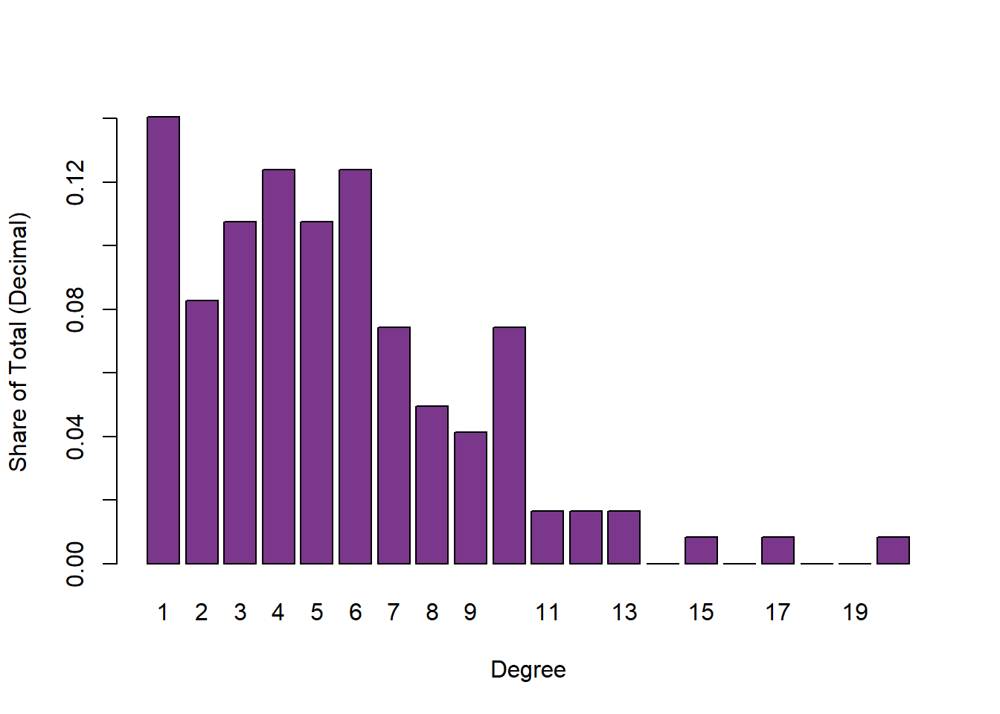
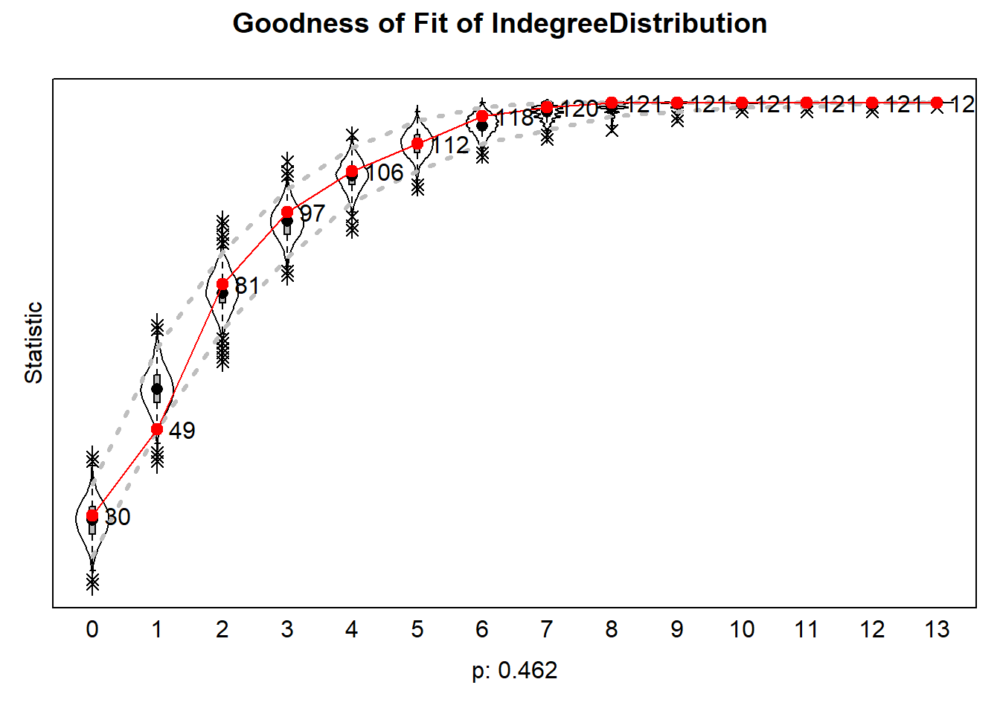
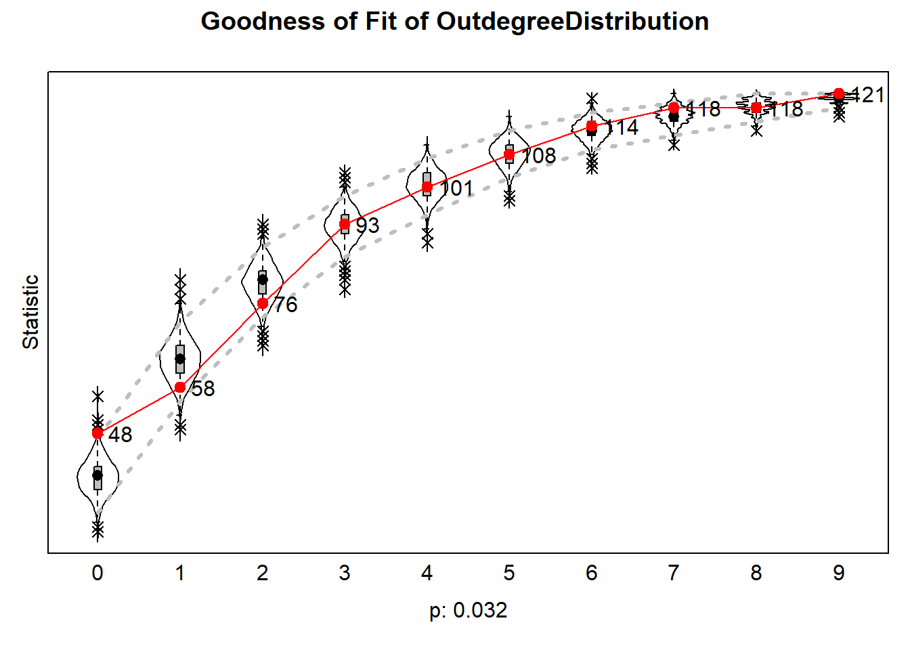
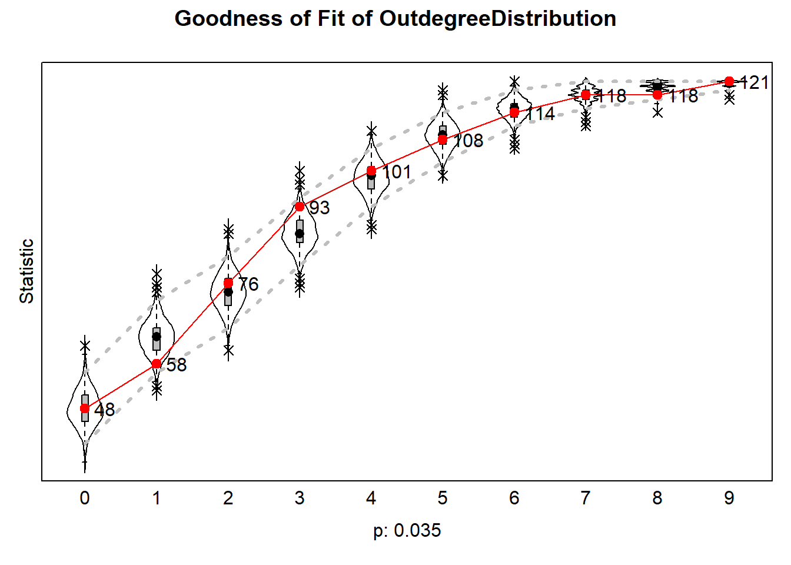
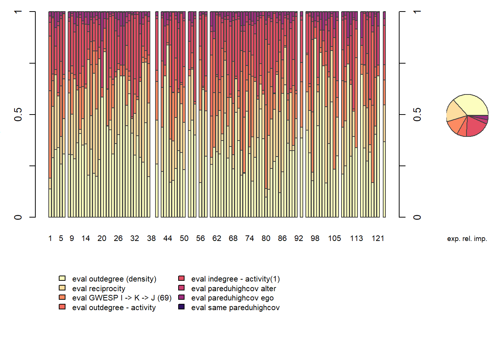

Analyses and Results
Susanna
2026-09-29
rm(list = ls())
#function by Jochem
fpackage.check <- function(packages) {
lapply(packages, FUN = function(x) {
if (!require(x, character.only = TRUE)) {
install.packages(x, dependencies = TRUE)
library(x, character.only = TRUE)
}
})
}
fsave <- function(x, file = NULL, location = "./data/processed/") {
ifelse(!dir.exists("data"), dir.create("data"), FALSE)
ifelse(!dir.exists("data/processed"), dir.create("data/processed"), FALSE)
if (is.null(file))
file = deparse(substitute(x))
datename <- substr(gsub("[:-]", "", Sys.time()), 1, 8)
totalname <- paste(location, datename, file, ".rda", sep = "")
save(x, file = totalname) #need to fix if file is reloaded as input name, not as x.
}
fload <- function(filename) {
load(filename)
get(ls()[ls() != "filename"])
}
fshowdf <- function(x, ...) {
knitr::kable(x, digits = 2, "html", ...) %>%
kableExtra::kable_styling(bootstrap_options = c("striped", "hover")) %>%
kableExtra::scroll_box(width = "100%", height = "300px")
}
colorize <- function(x, color) {
sprintf("<span style='color: %s;'>%s</span>", color, x)
}
packages <- c("sna","ape", "network", "devtools", "igraph", "RSiena", "tidyverse", "stringdist", "stringi", "lattice")
lapply(packages, require, character.only=T)## Loading required package: sna## Warning: package 'sna' was built under R version 4.5.3## Loading required package: statnet.common## Warning: package 'statnet.common' was built under R version 4.5.3##
## Attaching package: 'statnet.common'## The following objects are masked from 'package:base':
##
## attr, order, replace## Loading required package: network## Warning: package 'network' was built under R version 4.5.3##
## 'network' 1.20.0 (2026-02-06), part of the Statnet Project
## * 'news(package="network")' for changes since last version
## * 'citation("network")' for citation information
## * 'https://statnet.org' for help, support, and other information## sna: Tools for Social Network Analysis
## Version 2.8 created on 2024-09-07.
## copyright (c) 2005, Carter T. Butts, University of California-Irvine
## For citation information, type citation("sna").
## Type help(package="sna") to get started.## Loading required package: ape## Warning: package 'ape' was built under R version 4.5.3##
## Attaching package: 'ape'## The following objects are masked from 'package:sna':
##
## consensus, degree## Loading required package: devtools## Warning: package 'devtools' was built under R version 4.5.3## Loading required package: usethis## Warning: package 'usethis' was built under R version 4.5.3## Loading required package: igraph## Warning: package 'igraph' was built under R version 4.5.3##
## Attaching package: 'igraph'## The following objects are masked from 'package:ape':
##
## degree, edges, mst, ring## The following objects are masked from 'package:sna':
##
## betweenness, bonpow, closeness, components, degree, dyad.census,
## evcent, hierarchy, is.connected, neighborhood, triad.census## The following objects are masked from 'package:network':
##
## %c%, %s%, add.edges, add.vertices, delete.edges, delete.vertices,
## get.edge.attribute, get.edges, get.vertex.attribute, is.bipartite,
## is.directed, list.edge.attributes, list.vertex.attributes,
## set.edge.attribute, set.vertex.attribute## The following objects are masked from 'package:stats':
##
## decompose, spectrum## The following object is masked from 'package:base':
##
## union## Loading required package: RSiena## Warning: package 'RSiena' was built under R version 4.5.3## Loading required package: tidyverse## Warning: package 'tidyverse' was built under R version 4.5.3## Warning: package 'tibble' was built under R version 4.5.3## Warning: package 'tidyr' was built under R version 4.5.3## Warning: package 'readr' was built under R version 4.5.2## Warning: package 'dplyr' was built under R version 4.5.3## Warning: package 'stringr' was built under R version 4.5.3## Warning: package 'forcats' was built under R version 4.5.2## ── Attaching core tidyverse packages ─────────────
## ✔ dplyr 1.2.1 ✔ readr 2.1.6
## ✔ forcats 1.0.1 ✔ stringr 1.6.0
## ✔ ggplot2 4.0.0 ✔ tibble 3.3.1
## ✔ lubridate 1.9.4 ✔ tidyr 1.3.2
## ✔ purrr 1.1.0## ── Conflicts ──────────── tidyverse_conflicts() ──
## ✖ lubridate::%--%() masks igraph::%--%()
## ✖ dplyr::as_data_frame() masks tibble::as_data_frame(), igraph::as_data_frame()
## ✖ purrr::compose() masks igraph::compose()
## ✖ tidyr::crossing() masks igraph::crossing()
## ✖ dplyr::filter() masks stats::filter()
## ✖ dplyr::lag() masks stats::lag()
## ✖ purrr::simplify() masks igraph::simplify()
## ✖ dplyr::where() masks ape::where()
## ℹ Use the conflicted package (<http://conflicted.r-lib.org/>) to force all conflicts to become errors
## Loading required package: stringdist## Warning: package 'stringdist' was built under R version 4.5.2##
## Attaching package: 'stringdist'
##
## The following object is masked from 'package:tidyr':
##
## extract
##
## Loading required package: stringi## Warning: package 'stringi' was built under R version 4.5.3## Loading required package: lattice## [[1]]
## [1] TRUE
##
## [[2]]
## [1] TRUE
##
## [[3]]
## [1] TRUE
##
## [[4]]
## [1] TRUE
##
## [[5]]
## [1] TRUE
##
## [[6]]
## [1] TRUE
##
## [[7]]
## [1] TRUE
##
## [[8]]
## [1] TRUE
##
## [[9]]
## [1] TRUE
##
## [[10]]
## [1] TRUEload("./data/EduBridgeforRSiena.RData")1 Descriptive Statistics
1.1 Sample Description
The sample contained a total of 121 students, 67.8% of which had at least one parent/caregiver with a college diploma. 9.7% of the students came from an educationally mixed family, e.g. one parent/caregiver with and one parent/caregiver without a college diploma. Women made up 65.3% of the sample. The majority of the students identified as Asian, followed by white students.
Figure 1 Distribution Across Ethnic Groups
summary(parenteduhigh) #mean = 0.678## Min. 1st Qu. Median Mean 3rd Qu. Max. NA's
## 0.000 0.000 1.000 0.678 1.000 1.000 3summary(parentedudif) #mean = 0.09735## Min. 1st Qu. Median Mean 3rd Qu. Max. NA's
## 0.00000 0.00000 0.00000 0.09735 0.00000 1.00000 8summary(gendernew) #mean = 0.6529## Min. 1st Qu. Median Mean 3rd Qu. Max.
## 0.0000 0.0000 1.0000 0.6529 1.0000 1.0000ethnewf <- as.factor(ethnew)
histogram(ethnewf, type = "percent", col = "mediumorchid4")
1.2 Visualisation
hangingt1nona <- hanging_df_t1
hangingt1nona[hangingt1nona==9]<- 0
hangingt1nona <- as.matrix(hangingt1nona)
hangingt1 <- graph_from_adjacency_matrix(hangingt1nona, mode = "directed", weighted = NULL, diag = TRUE, add.colnames = NA, add.rownames = NA)
hangingt2nona <- hanging_df_t2
hangingt2nona[hangingt2nona==9]<- 0
hangingt2nona <- as.matrix(hangingt2nona)
hangingt2 <- graph_from_adjacency_matrix(hangingt2nona, mode = "directed", weighted = NULL, diag = TRUE, add.colnames = NA, add.rownames = NA)
rangegray <- colorRampPalette(c("grey91", "grey50", "grey30", "black"))
nbins <- 5
colourbetweenness <-rangegray(nbins)
colourpareduhigh <- ifelse(is.na(parenteduhigh), "white", ifelse(parentedudif==1, "mediumorchid4", ifelse(parenteduhigh==1, "#3A87AD", "lightgoldenrod")))
colourparedudif <- ifelse(is.na(parentedudif), "grey91", ifelse(parentedudif==1, "mediumorchid4", "grey91"))
layoutfr2 <- layout.fruchterman.reingold(hangingt2)## Warning: `layout.fruchterman.reingold()` was deprecated in
## igraph 2.1.0.
## ℹ Please use `layout_with_fr()` instead.
## This warning is displayed once per session.
## Call `lifecycle::last_lifecycle_warnings()` to
## see where this warning was generated.layoutdh2 <- igraph:: layout_with_dh(hangingt2)
V(hangingt1)$size = igraph::degree(hangingt1) * 0.4 + 7
V(hangingt2)$size = igraph::degree(hangingt2) * 0.4 + 7
{png("plot2.png", width = 14, height = 7, units = "in", res = 300)
par(mfrow = c(1, 2))
plot(hangingt1,
vertex.color = adjustcolor(colourpareduhigh, alpha.f = .5),
vertex.frame.color = colourparedudif,
vertex.frame.width = 2,
vertex.label = NA,
edge.curved = 0.2,
edge.arrow.size = 0.2,
edge.color = colourbetweenness[cut(igraph::edge_betweenness(hangingt1), breaks=nbins )],
layout = layoutfr2,
main = "Wave 1")
legend("topleft", c("university", "no university", "mixed", "missing"), pch = 21, col = "grey91", pt.bg = c("#3A87AD", "lightgoldenrod", "mediumorchid4", "white"), pt.cex = 1,
cex = 0.8, bty = "n", ncol = 1)
plot(hangingt2,
vertex.color = adjustcolor(colourpareduhigh, alpha.f = .5),
vertex.frame.color = colourparedudif,
vertex.frame.width = 2,
vertex.label = NA,
edge.curved = 0.2,
edge.arrow.size = 0.2,
edge.color = colourbetweenness[cut(igraph::edge_betweenness(hangingt2), breaks=nbins )],
layout = layoutfr2,
main = "Wave 2")
dev.off()}## png
## 2Figure 2
Evolution of Hanging Out Networks by Family Educational Background, Fixed at T2
knitr::include_graphics("plot2.png")
Note: Nodes were distributed in the graph based on the Fruchterman-Reingold forcedirected algorithm, which models repulsion between nodes and attraction between nodes that are connected. The nodes were fixed in their w2 location for both waves to visualise changes in specific ties. Node size indicates degree, darkness of ties indicates betweenness.
Before investigating whether the hypothesised effects are significant in individual students’ tie-making and -breaking, it is important to understand the observable dynamics within the network. For this purpose, I first explore the descriptive statistics in both waves. I start with basic network descriptives related to the evolution of ties, density, and pathlength, then I discuss triad configurations within the network, before finally calculating segregation based on parental educational attainment to answer research question 1.
1.3 Network Descriptives
1.3.1 Dyad Census
dyad_census(hangingt1)## $mut
## [1] 93
##
## $asym
## [1] 209
##
## $null
## [1] 6958dyad_census(hangingt2)## $mut
## [1] 60
##
## $asym
## [1] 150
##
## $null
## [1] 70501.3.2 Density
edge_density(hangingt1)## [1] 0.02720386edge_density(hangingt2)## [1] 0.01859504Between wave 1 and wave 2, we can observe a substantial reduction in the number of ties within students’ hanging out network, which is also visible in figure 2. While in the first wave, a total number of 302 pairs were connected, 93 of which were reciprocal connections, by the second wave, only 210 connections remain. This entails a drop of 30.5% of the initial number of dyads. This is reflected in density, which is low in both networks, but also drops substantially between waves (from 0.027 to 0.019). This is also observable in the above figure: many ties are broken between wave 1 and wave 2. The evolution of hanging out networks in this community of university students is thus strongly shaped by endowment, i.e. the decision to maintain or break a tie. Investigating homophily effects in endowment specifically is therefore particularly relevant for this context.
1.3.3 Degree Distribution
degdis1 <- degree_distribution(hangingt1, cumulative = FALSE)
library(lattice)
barplot(degdis1, xlab = "Degree", ylab = "Share of Total (Decimal)", names.arg = 1:23, col = "mediumorchid4")
degdis2 <- degree_distribution(hangingt2, cumulative = FALSE)
barplot(degdis2, xlab = "Degree", ylab = "Share of Total (Decimal)", names.arg = 1:20, col = "mediumorchid4")
1.3.4 Average Shortest Path Length
mean_distance(hangingt1, directed = T, unconnected = T, details = T)## $res
## [1] 4.840779
##
## $unconnected
## [1] 8566mean_distance(hangingt2, directed = T, unconnected = T, details = T)## $res
## [1] 4.591732
##
## $unconnected
## [1] 11593Surprisingly, the average shortest path length between vectors, not counting isolates, decreases from 4.84 in the first wave to 4.59 in the second wave - despite the reduction in the total number of connected pairs. This may be explained by the presence of several efficient brokers between clusters, visible in the wave 2 network depiction.
1.3.5 Triad Census
hangingt1m <- as.matrix(hanging_df_t1)
hangingt2m <- as.matrix(hanging_df_t2)
sna::triad.census(hangingt1m)## 003 012 102 021D 021U 021C 111D 111U 030T 030C 201 120D 120U 120C
## [1,] 185654 19612 9095 62226 231 208 247 920 2244 2 92 1046 6048 13
## 210 300
## [1,] 134 208sna::triad.census(hangingt2m)## 003 012 102 021D 021U 021C 111D 111U 030T 030C 201 120D 120U 120C
## [1,] 206607 14432 6184 53311 117 112 88 1050 1256 0 54 538 4019 13
## 210 300
## [1,] 102 97Between both waves, we can observe a reduction in all triad types except for the 111U constellation, which raises from occurring 920 times to occurring 1050 times, and the 120C constellation, which remains constant. This observed reduction in most triad compositions is likely another consequence of the overall reduction in ties.
1.4 RQ1: Segregation
hangingt1m <- as.matrix(hanging_df_t1)
hangingt2m <- as.matrix(hanging_df_t2)
# step 1: calculate distances
geodistances <- geodist(hangingt1m, count.paths = TRUE)
geodistances <- geodistances$gdist
# set the distance to yourself as Inf
diag(geodistances) <- Inf
# step 2: define a distance decay function. This one is pretty standard in the spatial autocorrelation literature but actually pretty arbitrary.
weights1 <- geodistances == 1#Jochem's formula for Moran's I
fMoran.I <- function(x, weight, scaled = FALSE, na.rm = FALSE, alternative = "two.sided", rowstandardize = TRUE) {
if (rowstandardize) {
if (dim(weight)[1] != dim(weight)[2])
stop("'weight' must be a square matrix")
n <- length(x)
if (dim(weight)[1] != n)
stop("'weight' must have as many rows as observations in 'x'")
ei <- -1/(n - 1)
nas <- is.na(x)
if (any(nas)) {
if (na.rm) {
x <- x[!nas]
n <- length(x)
weight <- weight[!nas, !nas]
} else {
warning("'x' has missing values: maybe you wanted to set na.rm = TRUE?")
return(list(observed = NA, expected = ei, sd = NA, p.value = NA))
}
}
ROWSUM <- rowSums(weight)
ROWSUM[ROWSUM == 0] <- 1
weight <- weight/ROWSUM
s <- sum(weight)
m <- mean(x)
y <- x - m
cv <- sum(weight * y %o% y)
v <- sum(y^2)
obs <- (n/s) * (cv/v)
if (scaled) {
i.max <- (n/s) * (sd(rowSums(weight) * y)/sqrt(v/(n - 1)))
obs <- obs/i.max
}
S1 <- 0.5 * sum((weight + t(weight))^2)
S2 <- sum((apply(weight, 1, sum) + apply(weight, 2, sum))^2)
s.sq <- s^2
k <- (sum(y^4)/n)/(v/n)^2
sdi <- sqrt((n * ((n^2 - 3 * n + 3) * S1 - n * S2 + 3 * s.sq) - k * (n * (n - 1) * S1 - 2 * n *
S2 + 6 * s.sq))/((n - 1) * (n - 2) * (n - 3) * s.sq) - 1/((n - 1)^2))
alternative <- match.arg(alternative, c("two.sided", "less", "greater"))
pv <- pnorm(obs, mean = ei, sd = sdi)
if (alternative == "two.sided")
pv <- if (obs <= ei)
2 * pv else 2 * (1 - pv)
if (alternative == "greater")
pv <- 1 - pv
list(observed = obs, expected = ei, sd = sdi, p.value = pv)
} else {
if (dim(weight)[1] != dim(weight)[2])
stop("'weight' must be a square matrix")
n <- length(x)
if (dim(weight)[1] != n)
stop("'weight' must have as many rows as observations in 'x'")
ei <- -1/(n - 1)
nas <- is.na(x)
if (any(nas)) {
if (na.rm) {
x <- x[!nas]
n <- length(x)
weight <- weight[!nas, !nas]
} else {
warning("'x' has missing values: maybe you wanted to set na.rm = TRUE?")
return(list(observed = NA, expected = ei, sd = NA, p.value = NA))
}
}
# ROWSUM <- rowSums(weight) ROWSUM[ROWSUM == 0] <- 1 weight <- weight/ROWSUM
s <- sum(weight)
m <- mean(x)
y <- x - m
cv <- sum(weight * y %o% y)
v <- sum(y^2)
obs <- (n/s) * (cv/v)
if (scaled) {
i.max <- (n/s) * (sd(rowSums(weight) * y)/sqrt(v/(n - 1)))
obs <- obs/i.max
}
S1 <- 0.5 * sum((weight + t(weight))^2)
S2 <- sum((apply(weight, 1, sum) + apply(weight, 2, sum))^2)
s.sq <- s^2
k <- (sum(y^4)/n)/(v/n)^2
sdi <- sqrt((n * ((n^2 - 3 * n + 3) * S1 - n * S2 + 3 * s.sq) - k * (n * (n - 1) * S1 - 2 * n *
S2 + 6 * s.sq))/((n - 1) * (n - 2) * (n - 3) * s.sq) - 1/((n - 1)^2))
alternative <- match.arg(alternative, c("two.sided", "less", "greater"))
pv <- pnorm(obs, mean = ei, sd = sdi)
if (alternative == "two.sided")
pv <- if (obs <= ei)
2 * pv else 2 * (1 - pv)
if (alternative == "greater")
pv <- 1 - pv
list(observed = obs, expected = ei, sd = sdi, p.value = pv)
}
}fMoran.I(parenteduhigh, scaled = FALSE, weight = weights1, na.rm = TRUE, rowstandardize = FALSE)## $observed
## [1] -0.005732169
##
## $expected
## [1] -0.008333333
##
## $sd
## [1] 0.01484742
##
## $p.value
## [1] 0.860928# step 1: calculate distances
geodistances2 <- geodist(hangingt2m, count.paths = TRUE)
geodistances2 <- geodistances2$gdist
# set the distance to yourself as Inf
diag(geodistances2) <- Inf
# step 2: define a distance decay function. This one is pretty standard in the spatial autocorrelation literature but actually pretty arbitrary.
weights3 <- geodistances2 == 1
fMoran.I(parenteduhigh, scaled = FALSE, weight = weights3, na.rm = TRUE, rowstandardize = FALSE)## $observed
## [1] -0.008589518
##
## $expected
## [1] -0.008333333
##
## $sd
## [1] 0.01598129
##
## $p.value
## [1] 0.9872102There is no evidence for segregation based on parental educational levels in either wave, indicating that across the entire network, students that hang out together are not necessarily more similar regarding the highest educational attainment among their parent(s)/caregiver(s). I therefore find no support for hypothesis 1. However, it is possible for the overall segregation to be insignificant while segregation does occur within specific clusters, in this case friend groups (Di Salvatore and Ruggeri 2021). Additionally, other network effects such as meeting opportunities through mutual friends may account for the lack of observed segregation. To answer research question two and three, it is therefore necessary to model students’ individual network decisions.
1.5 Students with a Mixed Background
The figure below highlights students from educationally mixed families, with size indicating betweenness. Students with a mixed background do not demonstrate higher betweenness scores than their peers. However, betweennes itself cannot provide conclusive evidence in favour of the hypothesis either way, as it is specifically the amount of shortest paths from first-generation to continuing-generation students that pass through those with a mixed background that I would be interested in, not paths between any pair of students. From the network visualisation alone, it is difficult to assess whether students with a mixed background have more diverse ties. Instead of fixing students in their wave two places, this figure determines locations based on students’s ties within each specific ties. It stands out that students with a mixed background in particular shift their position in the social network between wave one and wave two. While these students initially seem to be rather isolated, by wave two, they have formed new ties with both first- and continuing-generation students. This may suggest that students from an educationally mixed household are indeed a third group, who face initial challenges in forming ties, but create more diverse relations over time. To test the hypotheses, I will proceed with creating stochastic actor-oriented models.
V(hangingt1)$size = igraph::betweenness(hangingt1, normalized = T, directed = TRUE) * 70 + 7
V(hangingt2)$size = igraph::betweenness(hangingt2, normalized = T, directed = TRUE) * 70 + 7
layoutfr1 <- layout.fruchterman.reingold(hangingt1)
{png("plot3.png", width = 14, height = 7, units = "in", res = 300)
par(mfrow = c(1, 2))
plot(hangingt1,
vertex.color = adjustcolor(colourpareduhigh, alpha.f = .5),
vertex.frame.color = colourparedudif,
vertex.frame.width = 2,
vertex.label = NA,
edge.curved = 0.2,
edge.arrow.size = 0.2,
edge.color = colourbetweenness[cut(igraph::edge_betweenness(hangingt1), breaks=nbins )],
layout = layoutfr1,
main = "Wave 1")
legend("topleft", c("university", "no university", "mixed", "missing"), pch = 21, col = "grey91", pt.bg = c("#3A87AD", "lightgoldenrod", "mediumorchid4", "white"), pt.cex = 1,
cex = 0.8, bty = "n", ncol = 1)
plot(hangingt2,
vertex.color = adjustcolor(colourpareduhigh, alpha.f = .5),
vertex.frame.color = colourparedudif,
vertex.frame.width = 2,
vertex.label = NA,
edge.curved = 0.2,
edge.arrow.size = 0.2,
edge.color = colourbetweenness[cut(igraph::edge_betweenness(hangingt2), breaks=nbins )],
layout = layoutfr2,
main = "Wave 2")
dev.off()}## png
## 2Figure 3
Evolution of Hanging Out Networks by Family Educational Background, Flexible Positioning
knitr::include_graphics("plot3.png")
2 Explanatory Analysis
2.1 Model input preparation
2.1.1 Network in waves
#wave 1 = hangingt1, wave 2 = hangingt2
hangingt1m <- as.matrix(hanging_df_t1)
hangingt2m <- as.matrix(hanging_df_t2)
#diagonals to zero
diag(hangingt1m) <- 0
diag(hangingt2m) <- 0
#missings to NA
hangingt1mwna <- hangingt1m
hangingt1mwna[hangingt1mwna == 9] <- 10
hangingt2mwna <- hangingt2m
hangingt2mwna[hangingt2mwna == 9] <- 10
#nets into array
hanging_array <- array(data = c(hangingt1mwna, hangingt2mwna), dim = c(dim(hangingt1mwna), 2))
#dependent
net <- sienaDependent(hanging_array)2.1.2 Covariates: parenteduhigh, parentedudif, ethnew, gendernew
gendercov <- coCovar(gendernew) #constant covariate
ethcov <- coCovar(ethnew)
paredudifcov <- coCovar(parentedudif)
pareduhighcov <- coCovar(parenteduhigh)
mydata <- sienaDataCreate(net, gendercov, ethcov, paredudifcov, pareduhighcov)2.1.3 Overview of Siena data
write_report(mydata, outputName = "sienaData")## Basic data description written to text file sienaData.txt.2.2 Model 1: Homophily
myeff0910 <- getEffects(mydata)
# effectsDocumentation(myeff0910)ifelse(!dir.exists("results"), dir.create("results"), FALSE)## [1] FALSEprint01Report(mydata, modelname = "./results/edu_bridge")First, I add the recommended relational effects: out-degree activity, in-degree popularity, in-degree activity, reciprocity, and GWESPFF.
myeff <- includeEffects(myeff0910, outAct, inPop, inAct, recip, gwespFF) ## effectNumber effectName shortName include fix test
## 1 18 reciprocity recip TRUE FALSE FALSE
## 2 57 GWESP I -> K -> J (#) gwespFF TRUE FALSE FALSE
## 3 81 indegree - popularity inPop TRUE FALSE FALSE
## 4 118 outdegree - activity outAct TRUE FALSE FALSE
## 5 127 indegree - activity(#) inAct TRUE FALSE FALSE
## initialValue parm
## 1 0 0
## 2 0 69
## 3 0 0
## 4 0 0
## 5 0 1Subsequently, I will introduce homophily as an endowment effect.
myeff <- includeEffects(myeff, sameX, egoX, altX, type = "endow", interaction1 = "pareduhighcov")## effectNumber effectName shortName include fix test initialValue
## 1 818 pareduhighcov alter altX TRUE FALSE FALSE 0
## 2 833 pareduhighcov ego egoX TRUE FALSE FALSE 0
## 3 889 same pareduhighcov sameX TRUE FALSE FALSE 0
## parm type
## 1 0 endow
## 2 0 endow
## 3 0 endowmyeff## effectName include fix test initialValue parm type
## 1 basic rate parameter net TRUE FALSE FALSE 5.46796 0 rate
## 2 outdegree (density) TRUE FALSE FALSE -1.72530 0 eval
## 3 reciprocity TRUE FALSE FALSE 0.00000 0 eval
## 4 GWESP I -> K -> J (#) TRUE FALSE FALSE 0.00000 69 eval
## 5 indegree - popularity TRUE FALSE FALSE 0.00000 0 eval
## 6 outdegree - activity TRUE FALSE FALSE 0.00000 0 eval
## 7 indegree - activity(#) TRUE FALSE FALSE 0.00000 1 eval
## 8 pareduhighcov alter TRUE FALSE FALSE 0.00000 0 endow
## 9 pareduhighcov ego TRUE FALSE FALSE 0.00000 0 endow
## 10 same pareduhighcov TRUE FALSE FALSE 0.00000 0 endowAnd as a creation effect.
myeff <- includeEffects(myeff, sameX, egoX, altX, type = "creation", interaction1 = "pareduhighcov")## effectNumber effectName shortName include fix test initialValue
## 1 819 pareduhighcov alter altX TRUE FALSE FALSE 0
## 2 834 pareduhighcov ego egoX TRUE FALSE FALSE 0
## 3 890 same pareduhighcov sameX TRUE FALSE FALSE 0
## parm type
## 1 0 creation
## 2 0 creation
## 3 0 creationmyeff## effectName include fix test initialValue parm type
## 1 basic rate parameter net TRUE FALSE FALSE 5.46796 0 rate
## 2 outdegree (density) TRUE FALSE FALSE -1.72530 0 eval
## 3 reciprocity TRUE FALSE FALSE 0.00000 0 eval
## 4 GWESP I -> K -> J (#) TRUE FALSE FALSE 0.00000 69 eval
## 5 indegree - popularity TRUE FALSE FALSE 0.00000 0 eval
## 6 outdegree - activity TRUE FALSE FALSE 0.00000 0 eval
## 7 indegree - activity(#) TRUE FALSE FALSE 0.00000 1 eval
## 8 pareduhighcov alter TRUE FALSE FALSE 0.00000 0 endow
## 9 pareduhighcov alter TRUE FALSE FALSE 0.00000 0 creation
## 10 pareduhighcov ego TRUE FALSE FALSE 0.00000 0 endow
## 11 pareduhighcov ego TRUE FALSE FALSE 0.00000 0 creation
## 12 same pareduhighcov TRUE FALSE FALSE 0.00000 0 endow
## 13 same pareduhighcov TRUE FALSE FALSE 0.00000 0 creationmyAlgorithm <- sienaAlgorithmCreate(projname = "edu_bridge",
MaxDegree = c(net = 10),
n3 = 2000,
seed = 30000)## If you use this algorithm object, siena07 will create/use an output file edu_bridge.txt .mod1 <- siena07(myAlgorithm, data = mydata, effects = myeff, returnDeps = TRUE) #mod1 <- saveRDS(mod1, "mod1.rds")
mod1 <- readRDS("mod1.rds")
mod1## Estimates, standard errors and convergence t-ratios
##
## Estimate Standard Convergence
## Error t-ratio
##
## Rate parameters:
## 0 Rate parameter 8.5780 ( 0.8006 )
##
## Other parameters:
## 1. eval outdegree (density) -2.7148 ( 0.2693 ) -0.0167
## 2. eval reciprocity 2.8202 ( 0.6229 ) 0.0496
## 3. eval GWESP I -> K -> J (69) 1.9245 ( 0.3223 ) 0.0262
## 4. eval indegree - popularity -0.0536 ( 0.0439 ) 0.0099
## 5. eval outdegree - activity 0.0746 ( 0.0317 ) 0.0131
## 6. eval indegree - activity(1) -0.3510 ( 0.1521 ) 0.0372
## 7. endow pareduhighcov alter 0.9689 ( 0.3626 ) 0.0305
## 8. creat pareduhighcov alter -0.2426 ( 0.3162 ) -0.0012
## 9. endow pareduhighcov ego 6.8624 ( 4.9284 ) -0.0397
## 10. creat pareduhighcov ego -7.5028 ( 5.0200 ) -0.0060
## 11. endow same pareduhighcov -1.5508 ( 0.3622 ) -0.0032
## 12. creat same pareduhighcov 1.2977 ( 0.3121 ) -0.0377
##
## Overall maximum convergence ratio: 0.1568
##
##
## Degrees constrained to maximum values:
## net : 10
##
##
## Total of 4060 iteration steps.The overall convergence ratio is under .25, which is acceptable. Convergence of individual parameters is also sufficient (absolute values all under 0.1). The rate parameter indicates that each actor had, on average, 8.58 options for change (‘mini-steps’) within the simulation.
results <- data.frame(
effect = mod1$effects$effectName,
b = mod1$theta,
se = mod1$se,
t = mod1$theta / mod1$se,
p = 2 * pnorm(-abs(mod1$theta / mod1$se)))
pander::pander(results)| effect | b | se | t | p |
|---|---|---|---|---|
| outdegree (density) | -2.715 | 0.2693 | -10.08 | 6.766e-24 |
| reciprocity | 2.82 | 0.6229 | 4.528 | 5.964e-06 |
| GWESP I -> K -> J (69) | 1.925 | 0.3223 | 5.971 | 2.36e-09 |
| indegree - popularity | -0.05355 | 0.04392 | -1.219 | 0.2227 |
| outdegree - activity | 0.07463 | 0.03171 | 2.353 | 0.01861 |
| indegree - activity(1) | -0.351 | 0.1521 | -2.308 | 0.02099 |
| pareduhighcov alter | 0.9689 | 0.3626 | 2.672 | 0.007541 |
| pareduhighcov alter | -0.2426 | 0.3162 | -0.7674 | 0.4428 |
| pareduhighcov ego | 6.862 | 4.928 | 1.392 | 0.1638 |
| pareduhighcov ego | -7.503 | 5.02 | -1.495 | 0.135 |
| same pareduhighcov | -1.551 | 0.3622 | -4.282 | 1.85e-05 |
| same pareduhighcov | 1.298 | 0.3121 | 4.159 | 3.202e-05 |
2.2.1 Goodness of Fit
#Jochem's formula for Geodesic Distribution
GeodesicDistribution <- function(i, data, sims, period, groupName, varName, levls = c(1:5, Inf), cumulative = TRUE,
...) {
x <- networkExtraction(i, data, sims, period, groupName, varName)
require(sna)
a <- sna::geodist(symmetrize(x))$gdist
if (cumulative) {
gdi <- sapply(levls, function(i) {
sum(a <= i)
})
} else {
gdi <- sapply(levls, function(i) {
sum(a == i)
})
}
names(gdi) <- as.character(levls)
gdi
}
# The following function is taken from the help page for sienaTest
testall <- function(ans) {
for (i in which(ans$test)) {
sct <- score.Test(ans, i)
cat(ans$requestedEffects$effectName[i], "\n")
print(sct)
}
invisible(score.Test(ans))
}gofinm1 <- sienaGOF(mod1, IndegreeDistribution, verbose = FALSE, join = TRUE, varName = "net", levls = 0:13)
plot(gofinm1)## Note: some statistics are not plotted because their variance is 0.
## This holds for the statistic: 13.
gofoutm1 <- sienaGOF(mod1, OutdegreeDistribution, verbose = FALSE, join = TRUE, varName = "net", levls = 0:10)
plot(gofoutm1)## Note: some statistics are not plotted because their variance is 0.
## This holds for the statistic: 10.
gofgdm1 <- sienaGOF(mod1, GeodesicDistribution, cumulative = FALSE, verbose = FALSE, join = TRUE, varName = "net")
plot(gofgdm1)
goftrim1 <- sienaGOF(mod1, TriadCensus, verbose = FALSE, join = TRUE, varName = "net")
plot(goftrim1, center = TRUE, scale = TRUE)
The simulated networks based on the included effects show reasonable similarity with the observed network in terms of in-degree distribution, geodesic distribution, and triad census. However, the model somewhat underestimates the number of nodes with out-degree 0, and overestimates the number of nodes with out-degree 1. A potential explanation for the higher observed number of nodes with out-degree 0 might be that isolated students are less likely to increase their out-degree. In the following sub-model, I thus include the outIso effect.
2.2.2 (sub)Model 1.1: outIso
myeff1.1 <- includeEffects(myeff, outIso)## effectNumber effectName shortName include fix test initialValue parm
## 1 149 out-isolate outIso TRUE FALSE FALSE 0 1myeff1.1## effectName include fix test initialValue parm type
## 1 basic rate parameter net TRUE FALSE FALSE 5.46796 0 rate
## 2 outdegree (density) TRUE FALSE FALSE -1.72530 0 eval
## 3 reciprocity TRUE FALSE FALSE 0.00000 0 eval
## 4 GWESP I -> K -> J (#) TRUE FALSE FALSE 0.00000 69 eval
## 5 indegree - popularity TRUE FALSE FALSE 0.00000 0 eval
## 6 outdegree - activity TRUE FALSE FALSE 0.00000 0 eval
## 7 indegree - activity(#) TRUE FALSE FALSE 0.00000 1 eval
## 8 out-isolate TRUE FALSE FALSE 0.00000 1 eval
## 9 pareduhighcov alter TRUE FALSE FALSE 0.00000 0 endow
## 10 pareduhighcov alter TRUE FALSE FALSE 0.00000 0 creation
## 11 pareduhighcov ego TRUE FALSE FALSE 0.00000 0 endow
## 12 pareduhighcov ego TRUE FALSE FALSE 0.00000 0 creation
## 13 same pareduhighcov TRUE FALSE FALSE 0.00000 0 endow
## 14 same pareduhighcov TRUE FALSE FALSE 0.00000 0 creation#mod1.1 <- siena07(myAlgorithm, data = mydata, effects = myeff1.1, prevAns = mod1, returnDeps = TRUE) Including the out-degree isolate effect destabilises the estimation procedure, reflected in unrealistically high estimates. I will therefor explore alternative effects that may account for the underestimation of out-isolates.
2.2.3 (sub)Model 1.2: inIsDegree
myeff1.2 <- includeEffects(myeff, inIsDegree)## effectNumber effectName shortName include fix test initialValue
## 1 160 in-isolate Outdegree inIsDegree TRUE FALSE FALSE 0
## parm
## 1 0myeff1.2## effectName include fix test initialValue parm type
## 1 basic rate parameter net TRUE FALSE FALSE 5.46796 0 rate
## 2 outdegree (density) TRUE FALSE FALSE -1.72530 0 eval
## 3 reciprocity TRUE FALSE FALSE 0.00000 0 eval
## 4 GWESP I -> K -> J (#) TRUE FALSE FALSE 0.00000 69 eval
## 5 indegree - popularity TRUE FALSE FALSE 0.00000 0 eval
## 6 outdegree - activity TRUE FALSE FALSE 0.00000 0 eval
## 7 indegree - activity(#) TRUE FALSE FALSE 0.00000 1 eval
## 8 in-isolate Outdegree TRUE FALSE FALSE 0.00000 0 eval
## 9 pareduhighcov alter TRUE FALSE FALSE 0.00000 0 endow
## 10 pareduhighcov alter TRUE FALSE FALSE 0.00000 0 creation
## 11 pareduhighcov ego TRUE FALSE FALSE 0.00000 0 endow
## 12 pareduhighcov ego TRUE FALSE FALSE 0.00000 0 creation
## 13 same pareduhighcov TRUE FALSE FALSE 0.00000 0 endow
## 14 same pareduhighcov TRUE FALSE FALSE 0.00000 0 creation#mod1.2 <- siena07(myAlgorithm, data = mydata, effects = myeff1.2, prevAns = mod1, returnDeps = TRUE)
#mod1.2Including inIsDegree also destabilises the model. Parameter estimates rise to unrealistically high values, with large standard errors, individual convergence ratios way above 0.1, and an extremely high maximum covergence ratio.
2.2.4 (sub)Model 1.3: removing inPop
In model 1, the in-degree popularity was not significant. As this effect is not of theoretical interest, and reducing complexity can aid convergence and fit, I will remove the effect from the model.
myeff1.3 <- includeEffects(myeff0910, outAct, inAct, recip, gwespFF) ## effectNumber effectName shortName include fix test
## 1 18 reciprocity recip TRUE FALSE FALSE
## 2 57 GWESP I -> K -> J (#) gwespFF TRUE FALSE FALSE
## 3 118 outdegree - activity outAct TRUE FALSE FALSE
## 4 127 indegree - activity(#) inAct TRUE FALSE FALSE
## initialValue parm
## 1 0 0
## 2 0 69
## 3 0 0
## 4 0 1myeff1.3## effectName include fix test initialValue parm
## 1 basic rate parameter net TRUE FALSE FALSE 5.46796 0
## 2 outdegree (density) TRUE FALSE FALSE -1.72530 0
## 3 reciprocity TRUE FALSE FALSE 0.00000 0
## 4 GWESP I -> K -> J (#) TRUE FALSE FALSE 0.00000 69
## 5 outdegree - activity TRUE FALSE FALSE 0.00000 0
## 6 indegree - activity(#) TRUE FALSE FALSE 0.00000 1myeff1.3 <- includeEffects(myeff1.3, sameX, egoX, altX, type = "endow", interaction1 = "pareduhighcov")## effectNumber effectName shortName include fix test initialValue
## 1 818 pareduhighcov alter altX TRUE FALSE FALSE 0
## 2 833 pareduhighcov ego egoX TRUE FALSE FALSE 0
## 3 889 same pareduhighcov sameX TRUE FALSE FALSE 0
## parm type
## 1 0 endow
## 2 0 endow
## 3 0 endowmyeff1.3## effectName include fix test initialValue parm type
## 1 basic rate parameter net TRUE FALSE FALSE 5.46796 0 rate
## 2 outdegree (density) TRUE FALSE FALSE -1.72530 0 eval
## 3 reciprocity TRUE FALSE FALSE 0.00000 0 eval
## 4 GWESP I -> K -> J (#) TRUE FALSE FALSE 0.00000 69 eval
## 5 outdegree - activity TRUE FALSE FALSE 0.00000 0 eval
## 6 indegree - activity(#) TRUE FALSE FALSE 0.00000 1 eval
## 7 pareduhighcov alter TRUE FALSE FALSE 0.00000 0 endow
## 8 pareduhighcov ego TRUE FALSE FALSE 0.00000 0 endow
## 9 same pareduhighcov TRUE FALSE FALSE 0.00000 0 endowmyeff1.3 <- includeEffects(myeff1.3, sameX, egoX, altX, type = "creation", interaction1 = "pareduhighcov")## effectNumber effectName shortName include fix test initialValue
## 1 819 pareduhighcov alter altX TRUE FALSE FALSE 0
## 2 834 pareduhighcov ego egoX TRUE FALSE FALSE 0
## 3 890 same pareduhighcov sameX TRUE FALSE FALSE 0
## parm type
## 1 0 creation
## 2 0 creation
## 3 0 creationmyeff1.3## effectName include fix test initialValue parm type
## 1 basic rate parameter net TRUE FALSE FALSE 5.46796 0 rate
## 2 outdegree (density) TRUE FALSE FALSE -1.72530 0 eval
## 3 reciprocity TRUE FALSE FALSE 0.00000 0 eval
## 4 GWESP I -> K -> J (#) TRUE FALSE FALSE 0.00000 69 eval
## 5 outdegree - activity TRUE FALSE FALSE 0.00000 0 eval
## 6 indegree - activity(#) TRUE FALSE FALSE 0.00000 1 eval
## 7 pareduhighcov alter TRUE FALSE FALSE 0.00000 0 endow
## 8 pareduhighcov alter TRUE FALSE FALSE 0.00000 0 creation
## 9 pareduhighcov ego TRUE FALSE FALSE 0.00000 0 endow
## 10 pareduhighcov ego TRUE FALSE FALSE 0.00000 0 creation
## 11 same pareduhighcov TRUE FALSE FALSE 0.00000 0 endow
## 12 same pareduhighcov TRUE FALSE FALSE 0.00000 0 creationmod1.3 <- siena07(myAlgorithm, data = mydata, effects = myeff1.3, returnDeps = TRUE) #mod1.3 <- saveRDS(mod1.3, "mod1.3.rds")
mod1.3 <- readRDS("mod1.3.rds")
mod1.3## Estimates, standard errors and convergence t-ratios
##
## Estimate Standard Convergence
## Error t-ratio
##
## Rate parameters:
## 0 Rate parameter 8.3482 ( 0.7663 )
##
## Other parameters:
## 1. eval outdegree (density) -2.9352 ( 0.2271 ) -0.0074
## 2. eval reciprocity 3.0653 ( 0.7255 ) 0.0468
## 3. eval GWESP I -> K -> J (69) 1.9314 ( 0.4913 ) 0.0104
## 4. eval outdegree - activity 0.0785 ( 0.0312 ) -0.0093
## 5. eval indegree - activity(1) -0.3917 ( 0.1722 ) -0.0118
## 6. endow pareduhighcov alter 1.0203 ( 0.3321 ) 0.0310
## 7. creat pareduhighcov alter -0.2473 ( 0.2500 ) 0.0361
## 8. endow pareduhighcov ego 6.8685 ( 6.4780 ) -0.0287
## 9. creat pareduhighcov ego -7.5250 ( 6.6338 ) 0.0461
## 10. endow same pareduhighcov -1.6400 ( 0.4258 ) -0.0465
## 11. creat same pareduhighcov 1.3528 ( 0.5520 ) 0.0105
##
## Overall maximum convergence ratio: 0.1670
##
##
## Degrees constrained to maximum values:
## net : 10
##
##
## Total of 4007 iteration steps.The overall maximum convergence ratio and individual convergence t-ratios have returned to being acceptable.
results1.3 <- data.frame(
effect = mod1.3$effects$effectName,
b = mod1.3$theta,
se = mod1.3$se,
t = mod1.3$theta / mod1.3$se,
p = 2 * pnorm(-abs(mod1.3$theta / mod1.3$se)))
pander::pander(results1.3)| effect | b | se | t | p |
|---|---|---|---|---|
| outdegree (density) | -2.935 | 0.2271 | -12.92 | 3.346e-38 |
| reciprocity | 3.065 | 0.7255 | 4.225 | 2.387e-05 |
| GWESP I -> K -> J (69) | 1.931 | 0.4913 | 3.931 | 8.451e-05 |
| outdegree - activity | 0.0785 | 0.03125 | 2.512 | 0.012 |
| indegree - activity(1) | -0.3917 | 0.1722 | -2.274 | 0.02297 |
| pareduhighcov alter | 1.02 | 0.3321 | 3.072 | 0.002125 |
| pareduhighcov alter | -0.2473 | 0.25 | -0.9894 | 0.3225 |
| pareduhighcov ego | 6.869 | 6.478 | 1.06 | 0.289 |
| pareduhighcov ego | -7.525 | 6.634 | -1.134 | 0.2567 |
| same pareduhighcov | -1.64 | 0.4258 | -3.852 | 0.0001173 |
| same pareduhighcov | 1.353 | 0.552 | 2.451 | 0.01425 |
2.2.5 Goodness of Fit
gofinm1.3 <- sienaGOF(mod1.3, IndegreeDistribution, verbose = FALSE, join = TRUE, varName = "net", levls = 0:13)
plot(gofinm1.3)
gofoutm1.3 <- sienaGOF(mod1.3, OutdegreeDistribution, verbose = FALSE, join = TRUE, varName = "net", levls = 0:10)
plot(gofoutm1.3)## Note: some statistics are not plotted because their variance is 0.
## This holds for the statistic: 10.
goftrim1.3 <- sienaGOF(mod1.3, TriadCensus, verbose = FALSE, join = TRUE, varName = "net")
plot(goftrim1.3, center = TRUE, scale = TRUE)
gofgdm1.3 <- sienaGOF(mod1.3, GeodesicDistribution, cumulative = FALSE, verbose = FALSE, join = TRUE, varName = "net")
plot(gofgdm1.3)
Removing the in-degree popularity effect improved the fit on all measures. While the outdegree distribution of the simulated networks still significantly differs from that in the observed network, it is now much closer to being insignificant.
2.2.6 (sub)Model 1.4: removing alter effect
In the previous sub-models, the creation effect of alters’ highest parental educational attainment and the endowment effect of ego’s highest parental educational attainment were insignificant and had large standard errors. This might contribute to the observed lack of convergence when adding additional network statistics, even though these statistics improve goodness of fit. In the following sub-model, I will therefore rerun the model, but without the creation effect for alters’ highest parental educational attainment. I start with removing the alter highest parental educational attainment creation effect as this effect demonstrated the highest p-value in model 1 and 1.3. Generally, it is preferable to include all lower level components of an interaction, as it is usually not reasonable to assume that their main effect will be 0 when accounting for the interaction. However, as the effect has consistently been insignificant, the assumption is acceptable in the current situation.
myeff1.4 <- includeEffects(myeff0910, outAct, inAct, recip, gwespFF) ## effectNumber effectName shortName include fix test
## 1 18 reciprocity recip TRUE FALSE FALSE
## 2 57 GWESP I -> K -> J (#) gwespFF TRUE FALSE FALSE
## 3 118 outdegree - activity outAct TRUE FALSE FALSE
## 4 127 indegree - activity(#) inAct TRUE FALSE FALSE
## initialValue parm
## 1 0 0
## 2 0 69
## 3 0 0
## 4 0 1myeff1.4 <- includeEffects(myeff1.4, sameX, egoX, altX, type = "endow", interaction1 = "pareduhighcov")## effectNumber effectName shortName include fix test initialValue
## 1 818 pareduhighcov alter altX TRUE FALSE FALSE 0
## 2 833 pareduhighcov ego egoX TRUE FALSE FALSE 0
## 3 889 same pareduhighcov sameX TRUE FALSE FALSE 0
## parm type
## 1 0 endow
## 2 0 endow
## 3 0 endowmyeff1.4## effectName include fix test initialValue parm type
## 1 basic rate parameter net TRUE FALSE FALSE 5.46796 0 rate
## 2 outdegree (density) TRUE FALSE FALSE -1.72530 0 eval
## 3 reciprocity TRUE FALSE FALSE 0.00000 0 eval
## 4 GWESP I -> K -> J (#) TRUE FALSE FALSE 0.00000 69 eval
## 5 outdegree - activity TRUE FALSE FALSE 0.00000 0 eval
## 6 indegree - activity(#) TRUE FALSE FALSE 0.00000 1 eval
## 7 pareduhighcov alter TRUE FALSE FALSE 0.00000 0 endow
## 8 pareduhighcov ego TRUE FALSE FALSE 0.00000 0 endow
## 9 same pareduhighcov TRUE FALSE FALSE 0.00000 0 endowmyeff1.4 <- includeEffects(myeff1.4, sameX, egoX, type = "creation", interaction1 = "pareduhighcov")## effectNumber effectName shortName include fix test initialValue
## 1 834 pareduhighcov ego egoX TRUE FALSE FALSE 0
## 2 890 same pareduhighcov sameX TRUE FALSE FALSE 0
## parm type
## 1 0 creation
## 2 0 creationmyeff1.4## effectName include fix test initialValue parm type
## 1 basic rate parameter net TRUE FALSE FALSE 5.46796 0 rate
## 2 outdegree (density) TRUE FALSE FALSE -1.72530 0 eval
## 3 reciprocity TRUE FALSE FALSE 0.00000 0 eval
## 4 GWESP I -> K -> J (#) TRUE FALSE FALSE 0.00000 69 eval
## 5 outdegree - activity TRUE FALSE FALSE 0.00000 0 eval
## 6 indegree - activity(#) TRUE FALSE FALSE 0.00000 1 eval
## 7 pareduhighcov alter TRUE FALSE FALSE 0.00000 0 endow
## 8 pareduhighcov ego TRUE FALSE FALSE 0.00000 0 endow
## 9 pareduhighcov ego TRUE FALSE FALSE 0.00000 0 creation
## 10 same pareduhighcov TRUE FALSE FALSE 0.00000 0 endow
## 11 same pareduhighcov TRUE FALSE FALSE 0.00000 0 creationmod1.4 <- siena07(myAlgorithm, data = mydata, effects = myeff1.4, returnDeps = TRUE) #mod1.4 <- saveRDS(mod1.4, "mod1.4.rds")
mod1.4 <- readRDS("mod1.4.rds")
mod1.4## Estimates, standard errors and convergence t-ratios
##
## Estimate Standard Convergence
## Error t-ratio
##
## Rate parameters:
## 0 Rate parameter 8.0910 ( 0.7382 )
##
## Other parameters:
## 1. eval outdegree (density) -2.9653 ( 0.2210 ) 0.0942
## 2. eval reciprocity 3.0781 ( 1.0367 ) -0.0069
## 3. eval GWESP I -> K -> J (69) 1.9402 ( 0.7239 ) 0.0463
## 4. eval outdegree - activity 0.0772 ( 0.0376 ) 0.0854
## 5. eval indegree - activity(1) -0.3898 ( 0.3043 ) 0.0818
## 6. endow pareduhighcov alter 0.9854 ( 0.3425 ) -0.0417
## 7. endow pareduhighcov ego 6.2913 ( 9.7937 ) -0.0025
## 8. creat pareduhighcov ego -6.9852 ( 9.4532 ) -0.0523
## 9. endow same pareduhighcov -1.6479 ( 0.6017 ) -0.0088
## 10. creat same pareduhighcov 1.3914 ( 0.3397 ) 0.0597
##
## Overall maximum convergence ratio: 0.1901
##
##
## Degrees constrained to maximum values:
## net : 10
##
##
## Total of 3926 iteration steps.Convergence is once again acceptable.
results1.4 <- data.frame(
effect = mod1.4$effects$effectName,
b = mod1.4$theta,
se = mod1.4$se,
t = mod1.4$theta / mod1.4$se,
p = 2 * pnorm(-abs(mod1.4$theta / mod1.4$se)))
pander::pander(results1.4)| effect | b | se | t | p |
|---|---|---|---|---|
| outdegree (density) | -2.965 | 0.221 | -13.42 | 4.608e-41 |
| reciprocity | 3.078 | 1.037 | 2.969 | 0.002986 |
| GWESP I -> K -> J (69) | 1.94 | 0.7239 | 2.68 | 0.007353 |
| outdegree - activity | 0.07723 | 0.03761 | 2.054 | 0.04002 |
| indegree - activity(1) | -0.3898 | 0.3043 | -1.281 | 0.2001 |
| pareduhighcov alter | 0.9854 | 0.3425 | 2.877 | 0.004014 |
| pareduhighcov ego | 6.291 | 9.794 | 0.6424 | 0.5206 |
| pareduhighcov ego | -6.985 | 9.453 | -0.7389 | 0.46 |
| same pareduhighcov | -1.648 | 0.6017 | -2.739 | 0.006168 |
| same pareduhighcov | 1.391 | 0.3397 | 4.096 | 4.202e-05 |
The direction and significance of effects remains the same.
2.2.7 Goodness of Fit
gofinm1.4 <- sienaGOF(mod1.4, IndegreeDistribution, verbose = FALSE, join = TRUE, varName = "net", levls = 0:13)
plot(gofinm1.4)
gofoutm1.4 <- sienaGOF(mod1.4, OutdegreeDistribution, verbose = FALSE, join = TRUE, varName = "net", levls = 0:10)
plot(gofoutm1.4)## Note: some statistics are not plotted because their variance is 0.
## This holds for the statistic: 10.
goftrim1.4 <- sienaGOF(mod1.4, TriadCensus, verbose = FALSE, join = TRUE, varName = "net")
plot(goftrim1.4, center = TRUE, scale = TRUE)
gofgdm1.4 <- sienaGOF(mod1.4, GeodesicDistribution, cumulative = FALSE, verbose = FALSE, join = TRUE, varName = "net")
plot(gofgdm1.4)
Removing the alter effect does not improve overall fit.
2.2.8 (sub)Model 1.5: No inPop, with outIso
myeff1.5 <- includeEffects(myeff1.3, outIso) ## effectNumber effectName shortName include fix test initialValue parm
## 1 149 out-isolate outIso TRUE FALSE FALSE 0 1myeff1.5## effectName include fix test initialValue parm type
## 1 basic rate parameter net TRUE FALSE FALSE 5.46796 0 rate
## 2 outdegree (density) TRUE FALSE FALSE -1.72530 0 eval
## 3 reciprocity TRUE FALSE FALSE 0.00000 0 eval
## 4 GWESP I -> K -> J (#) TRUE FALSE FALSE 0.00000 69 eval
## 5 outdegree - activity TRUE FALSE FALSE 0.00000 0 eval
## 6 indegree - activity(#) TRUE FALSE FALSE 0.00000 1 eval
## 7 out-isolate TRUE FALSE FALSE 0.00000 1 eval
## 8 pareduhighcov alter TRUE FALSE FALSE 0.00000 0 endow
## 9 pareduhighcov alter TRUE FALSE FALSE 0.00000 0 creation
## 10 pareduhighcov ego TRUE FALSE FALSE 0.00000 0 endow
## 11 pareduhighcov ego TRUE FALSE FALSE 0.00000 0 creation
## 12 same pareduhighcov TRUE FALSE FALSE 0.00000 0 endow
## 13 same pareduhighcov TRUE FALSE FALSE 0.00000 0 creationmod1.5 <- siena07(myAlgorithm, data = mydata, effects = myeff1.5, prevAns = mod1.3, returnDeps = TRUE) #mod1.5 <- saveRDS(mod1.5, "mod1.5.rds")
mod1.5 <- readRDS("mod1.5.rds")
mod1.5## Estimates, standard errors and convergence t-ratios
##
## Estimate Standard Convergence
## Error t-ratio
##
## Rate parameters:
## 0 Rate parameter 8.5271 ( 0.8270 )
##
## Other parameters:
## 1. eval outdegree (density) -2.1356 ( 0.3331 ) -0.0060
## 2. eval reciprocity 3.0498 ( 0.4005 ) 0.0282
## 3. eval GWESP I -> K -> J (69) 1.7739 ( 0.2859 ) 0.0072
## 4. eval outdegree - activity 0.0174 ( 0.0281 ) -0.0122
## 5. eval indegree - activity(1) -0.3758 ( 0.1069 ) 0.0366
## 6. eval out-isolate 2.6005 ( 1.3459 ) -0.0149
## 7. endow pareduhighcov alter 0.9455 ( 0.3666 ) -0.0366
## 8. creat pareduhighcov alter -0.2403 ( 0.2873 ) -0.0265
## 9. endow pareduhighcov ego 4.6109 ( 5.9776 ) 0.1021
## 10. creat pareduhighcov ego -5.0998 ( 5.8552 ) -0.0073
## 11. endow same pareduhighcov -1.6357 ( 0.3657 ) 0.0342
## 12. creat same pareduhighcov 1.2830 ( 0.2895 ) 0.0064
##
## Overall maximum convergence ratio: 0.1596
##
##
## Degrees constrained to maximum values:
## net : 10
##
##
## Total of 4060 iteration steps.Convergence is acceptable.
results1.5 <- data.frame(
effect = mod1.5$effects$effectName,
b = mod1.5$theta,
se = mod1.5$se,
t = mod1.5$theta / mod1.5$se,
p = 2 * pnorm(-abs(mod1.5$theta / mod1.5$se)))
pander::pander(results1.5)| effect | b | se | t | p |
|---|---|---|---|---|
| outdegree (density) | -2.136 | 0.3331 | -6.411 | 1.447e-10 |
| reciprocity | 3.05 | 0.4005 | 7.615 | 2.639e-14 |
| GWESP I -> K -> J (69) | 1.774 | 0.2859 | 6.205 | 5.464e-10 |
| outdegree - activity | 0.01744 | 0.02814 | 0.6198 | 0.5354 |
| indegree - activity(1) | -0.3758 | 0.1069 | -3.517 | 0.0004361 |
| out-isolate | 2.6 | 1.346 | 1.932 | 0.05334 |
| pareduhighcov alter | 0.9455 | 0.3666 | 2.579 | 0.009896 |
| pareduhighcov alter | -0.2403 | 0.2873 | -0.8366 | 0.4028 |
| pareduhighcov ego | 4.611 | 5.978 | 0.7714 | 0.4405 |
| pareduhighcov ego | -5.1 | 5.855 | -0.871 | 0.3838 |
| same pareduhighcov | -1.636 | 0.3657 | -4.473 | 7.713e-06 |
| same pareduhighcov | 1.283 | 0.2895 | 4.432 | 9.349e-06 |
2.2.9 Goodness of Fit
gofinm1.5 <- sienaGOF(mod1.5, IndegreeDistribution, verbose = FALSE, join = TRUE, varName = "net", levls = 0:13)
plot(gofinm1.5)gofoutm1.5 <- sienaGOF(mod1.5, OutdegreeDistribution, verbose = FALSE, join = TRUE, varName = "net", levls = 0:10)
plot(gofoutm1.5)## Note: some statistics are not plotted because their variance is 0.
## This holds for the statistic: 10.
goftrim1.5 <- sienaGOF(mod1.5, TriadCensus, verbose = FALSE, join = TRUE, varName = "net")
plot(goftrim1.5, center = TRUE, scale = TRUE)
gofgdm1.5 <- sienaGOF(mod1.5, GeodesicDistribution, cumulative = FALSE, verbose = FALSE, join = TRUE, varName = "net")
plot(gofgdm1.5)
Adding an out-degree isolate effect reduces the goodness of fit.
As model 1.3 demonstrated good fit on indegree, geodesic distribution, and the triad census, with an outdegree distribution that was close to being insignificant, I will proceed with that model.
2.2.10 Final Model RQ2
pander::pander(results1.3)| effect | b | se | t | p |
|---|---|---|---|---|
| outdegree (density) | -2.935 | 0.2271 | -12.92 | 3.346e-38 |
| reciprocity | 3.065 | 0.7255 | 4.225 | 2.387e-05 |
| GWESP I -> K -> J (69) | 1.931 | 0.4913 | 3.931 | 8.451e-05 |
| outdegree - activity | 0.0785 | 0.03125 | 2.512 | 0.012 |
| indegree - activity(1) | -0.3917 | 0.1722 | -2.274 | 0.02297 |
| pareduhighcov alter | 1.02 | 0.3321 | 3.072 | 0.002125 |
| pareduhighcov alter | -0.2473 | 0.25 | -0.9894 | 0.3225 |
| pareduhighcov ego | 6.869 | 6.478 | 1.06 | 0.289 |
| pareduhighcov ego | -7.525 | 6.634 | -1.134 | 0.2567 |
| same pareduhighcov | -1.64 | 0.4258 | -3.852 | 0.0001173 |
| same pareduhighcov | 1.353 | 0.552 | 2.451 | 0.01425 |
Interpretation of the model will follow at the end of the chapter, after evaluating it in relation to the more complex models used to test hypothesis 3 and including control variables.
2.3 Model 2: Homophily x Educationally Mixed Family
myeff2 <- includeEffects(myeff1.3, egoX, interaction1 = "paredudifcov", type = "endow")## effectNumber effectName shortName include fix test initialValue parm
## 1 649 paredudifcov ego egoX TRUE FALSE FALSE 0 0
## type
## 1 endowmyeff2## effectName include fix test initialValue parm type
## 1 basic rate parameter net TRUE FALSE FALSE 5.46796 0 rate
## 2 outdegree (density) TRUE FALSE FALSE -1.72530 0 eval
## 3 reciprocity TRUE FALSE FALSE 0.00000 0 eval
## 4 GWESP I -> K -> J (#) TRUE FALSE FALSE 0.00000 69 eval
## 5 outdegree - activity TRUE FALSE FALSE 0.00000 0 eval
## 6 indegree - activity(#) TRUE FALSE FALSE 0.00000 1 eval
## 7 paredudifcov ego TRUE FALSE FALSE 0.00000 0 endow
## 8 pareduhighcov alter TRUE FALSE FALSE 0.00000 0 endow
## 9 pareduhighcov alter TRUE FALSE FALSE 0.00000 0 creation
## 10 pareduhighcov ego TRUE FALSE FALSE 0.00000 0 endow
## 11 pareduhighcov ego TRUE FALSE FALSE 0.00000 0 creation
## 12 same pareduhighcov TRUE FALSE FALSE 0.00000 0 endow
## 13 same pareduhighcov TRUE FALSE FALSE 0.00000 0 creationmyeff2 <- includeEffects(myeff2, egoX, interaction1 = "paredudifcov", type = "creation")## effectNumber effectName shortName include fix test initialValue parm
## 1 650 paredudifcov ego egoX TRUE FALSE FALSE 0 0
## type
## 1 creationmyeff2## effectName include fix test initialValue parm type
## 1 basic rate parameter net TRUE FALSE FALSE 5.46796 0 rate
## 2 outdegree (density) TRUE FALSE FALSE -1.72530 0 eval
## 3 reciprocity TRUE FALSE FALSE 0.00000 0 eval
## 4 GWESP I -> K -> J (#) TRUE FALSE FALSE 0.00000 69 eval
## 5 outdegree - activity TRUE FALSE FALSE 0.00000 0 eval
## 6 indegree - activity(#) TRUE FALSE FALSE 0.00000 1 eval
## 7 paredudifcov ego TRUE FALSE FALSE 0.00000 0 endow
## 8 paredudifcov ego TRUE FALSE FALSE 0.00000 0 creation
## 9 pareduhighcov alter TRUE FALSE FALSE 0.00000 0 endow
## 10 pareduhighcov alter TRUE FALSE FALSE 0.00000 0 creation
## 11 pareduhighcov ego TRUE FALSE FALSE 0.00000 0 endow
## 12 pareduhighcov ego TRUE FALSE FALSE 0.00000 0 creation
## 13 same pareduhighcov TRUE FALSE FALSE 0.00000 0 endow
## 14 same pareduhighcov TRUE FALSE FALSE 0.00000 0 creationmyeff2 <- set_interaction(myeff2, list(sameX, egoX), type = "endow", covar1=c("pareduhighcov", "paredudifcov"))## effectNumber effectName shortName include fix
## 1 649 paredudifcov ego egoX TRUE FALSE
## 2 889 same pareduhighcov sameX TRUE FALSE
## 3 1002 paredudifcov ego x same pareduhighcov unspInt TRUE FALSE
## test initialValue parm type effect1 effect2
## 1 FALSE 0 0 endow 0 0
## 2 FALSE 0 0 endow 0 0
## 3 FALSE 0 0 endow 889 649myeff2## effectName include fix test initialValue parm
## 1 basic rate parameter net TRUE FALSE FALSE 5.46796 0
## 2 outdegree (density) TRUE FALSE FALSE -1.72530 0
## 3 reciprocity TRUE FALSE FALSE 0.00000 0
## 4 GWESP I -> K -> J (69) TRUE FALSE FALSE 0.00000 69
## 5 outdegree - activity TRUE FALSE FALSE 0.00000 0
## 6 indegree - activity(1) TRUE FALSE FALSE 0.00000 1
## 7 paredudifcov ego TRUE FALSE FALSE 0.00000 0
## 8 paredudifcov ego TRUE FALSE FALSE 0.00000 0
## 9 pareduhighcov alter TRUE FALSE FALSE 0.00000 0
## 10 pareduhighcov alter TRUE FALSE FALSE 0.00000 0
## 11 pareduhighcov ego TRUE FALSE FALSE 0.00000 0
## 12 pareduhighcov ego TRUE FALSE FALSE 0.00000 0
## 13 same pareduhighcov TRUE FALSE FALSE 0.00000 0
## 14 same pareduhighcov TRUE FALSE FALSE 0.00000 0
## 15 paredudifcov ego x same pareduhighcov TRUE FALSE FALSE 0.00000 0
## type effect1 effect2
## 1 rate 0 0
## 2 eval 0 0
## 3 eval 0 0
## 4 eval 0 0
## 5 eval 0 0
## 6 eval 0 0
## 7 endow 0 0
## 8 creation 0 0
## 9 endow 0 0
## 10 creation 0 0
## 11 endow 0 0
## 12 creation 0 0
## 13 endow 0 0
## 14 creation 0 0
## 15 endow 889 649myeff2 <- set_interaction(myeff2, list(sameX, egoX), type = "creation", covar1=c("pareduhighcov", "paredudifcov"))## effectNumber effectName shortName include fix
## 1 650 paredudifcov ego egoX TRUE FALSE
## 2 890 same pareduhighcov sameX TRUE FALSE
## 3 1003 paredudifcov ego x same pareduhighcov unspInt TRUE FALSE
## test initialValue parm type effect1 effect2
## 1 FALSE 0 0 creation 0 0
## 2 FALSE 0 0 creation 0 0
## 3 FALSE 0 0 creation 890 650myeff2## effectName include fix test initialValue parm
## 1 basic rate parameter net TRUE FALSE FALSE 5.46796 0
## 2 outdegree (density) TRUE FALSE FALSE -1.72530 0
## 3 reciprocity TRUE FALSE FALSE 0.00000 0
## 4 GWESP I -> K -> J (69) TRUE FALSE FALSE 0.00000 69
## 5 outdegree - activity TRUE FALSE FALSE 0.00000 0
## 6 indegree - activity(1) TRUE FALSE FALSE 0.00000 1
## 7 paredudifcov ego TRUE FALSE FALSE 0.00000 0
## 8 paredudifcov ego TRUE FALSE FALSE 0.00000 0
## 9 pareduhighcov alter TRUE FALSE FALSE 0.00000 0
## 10 pareduhighcov alter TRUE FALSE FALSE 0.00000 0
## 11 pareduhighcov ego TRUE FALSE FALSE 0.00000 0
## 12 pareduhighcov ego TRUE FALSE FALSE 0.00000 0
## 13 same pareduhighcov TRUE FALSE FALSE 0.00000 0
## 14 same pareduhighcov TRUE FALSE FALSE 0.00000 0
## 15 paredudifcov ego x same pareduhighcov TRUE FALSE FALSE 0.00000 0
## 16 paredudifcov ego x same pareduhighcov TRUE FALSE FALSE 0.00000 0
## type effect1 effect2
## 1 rate 0 0
## 2 eval 0 0
## 3 eval 0 0
## 4 eval 0 0
## 5 eval 0 0
## 6 eval 0 0
## 7 endow 0 0
## 8 creation 0 0
## 9 endow 0 0
## 10 creation 0 0
## 11 endow 0 0
## 12 creation 0 0
## 13 endow 0 0
## 14 creation 0 0
## 15 endow 889 649
## 16 creation 890 650#mod2 <- siena07(myAlgorithm, data = mydata, effects = myeff2, prevAns = mod1.3, returnDeps = TRUE)
#mod2The model produces unrealistic estimated parameters with very high standard errors. This points to the model being overly complex, which is not entirely unexpected based on the large number of both endowment and creation effects. I will proceed by combining all lower-level endowment and creation effects into evaluation effects (which should be equivalent to the combination of endowment and creation). The homophily and homophily x mixed effects will be kept as separate endowment and creation effects, as these are relevant to the research question.
2.3.1 (sub)Model 2.1: reduced complexity
myeff2.1 <- includeEffects(myeff0910, outAct, inAct, recip, gwespFF) ## effectNumber effectName shortName include fix test
## 1 18 reciprocity recip TRUE FALSE FALSE
## 2 57 GWESP I -> K -> J (#) gwespFF TRUE FALSE FALSE
## 3 118 outdegree - activity outAct TRUE FALSE FALSE
## 4 127 indegree - activity(#) inAct TRUE FALSE FALSE
## initialValue parm
## 1 0 0
## 2 0 69
## 3 0 0
## 4 0 1myeff2.1 <- includeEffects(myeff2.1, egoX, altX, type = "eval", interaction1 = "pareduhighcov")## effectNumber effectName shortName include fix test initialValue
## 1 817 pareduhighcov alter altX TRUE FALSE FALSE 0
## 2 832 pareduhighcov ego egoX TRUE FALSE FALSE 0
## parm
## 1 0
## 2 0myeff2.1## effectName include fix test initialValue parm
## 1 basic rate parameter net TRUE FALSE FALSE 5.46796 0
## 2 outdegree (density) TRUE FALSE FALSE -1.72530 0
## 3 reciprocity TRUE FALSE FALSE 0.00000 0
## 4 GWESP I -> K -> J (#) TRUE FALSE FALSE 0.00000 69
## 5 outdegree - activity TRUE FALSE FALSE 0.00000 0
## 6 indegree - activity(#) TRUE FALSE FALSE 0.00000 1
## 7 pareduhighcov alter TRUE FALSE FALSE 0.00000 0
## 8 pareduhighcov ego TRUE FALSE FALSE 0.00000 0myeff2.1 <- includeEffects(myeff2.1, egoX, interaction1 = "paredudifcov", type = "eval")## effectNumber effectName shortName include fix test initialValue parm
## 1 648 paredudifcov ego egoX TRUE FALSE FALSE 0 0myeff2.1## effectName include fix test initialValue parm
## 1 basic rate parameter net TRUE FALSE FALSE 5.46796 0
## 2 outdegree (density) TRUE FALSE FALSE -1.72530 0
## 3 reciprocity TRUE FALSE FALSE 0.00000 0
## 4 GWESP I -> K -> J (#) TRUE FALSE FALSE 0.00000 69
## 5 outdegree - activity TRUE FALSE FALSE 0.00000 0
## 6 indegree - activity(#) TRUE FALSE FALSE 0.00000 1
## 7 paredudifcov ego TRUE FALSE FALSE 0.00000 0
## 8 pareduhighcov alter TRUE FALSE FALSE 0.00000 0
## 9 pareduhighcov ego TRUE FALSE FALSE 0.00000 0myeff2.1 <- includeEffects(myeff2.1, sameX, interaction1 = "pareduhighcov", type = "endow")## effectNumber effectName shortName include fix test initialValue
## 1 889 same pareduhighcov sameX TRUE FALSE FALSE 0
## parm type
## 1 0 endowmyeff2.1## effectName include fix test initialValue parm type
## 1 basic rate parameter net TRUE FALSE FALSE 5.46796 0 rate
## 2 outdegree (density) TRUE FALSE FALSE -1.72530 0 eval
## 3 reciprocity TRUE FALSE FALSE 0.00000 0 eval
## 4 GWESP I -> K -> J (#) TRUE FALSE FALSE 0.00000 69 eval
## 5 outdegree - activity TRUE FALSE FALSE 0.00000 0 eval
## 6 indegree - activity(#) TRUE FALSE FALSE 0.00000 1 eval
## 7 paredudifcov ego TRUE FALSE FALSE 0.00000 0 eval
## 8 pareduhighcov alter TRUE FALSE FALSE 0.00000 0 eval
## 9 pareduhighcov ego TRUE FALSE FALSE 0.00000 0 eval
## 10 same pareduhighcov TRUE FALSE FALSE 0.00000 0 endowmyeff2.1 <- includeEffects(myeff2.1, sameX, interaction1 = "pareduhighcov", type = "creation")## effectNumber effectName shortName include fix test initialValue
## 1 890 same pareduhighcov sameX TRUE FALSE FALSE 0
## parm type
## 1 0 creationmyeff2.1## effectName include fix test initialValue parm type
## 1 basic rate parameter net TRUE FALSE FALSE 5.46796 0 rate
## 2 outdegree (density) TRUE FALSE FALSE -1.72530 0 eval
## 3 reciprocity TRUE FALSE FALSE 0.00000 0 eval
## 4 GWESP I -> K -> J (#) TRUE FALSE FALSE 0.00000 69 eval
## 5 outdegree - activity TRUE FALSE FALSE 0.00000 0 eval
## 6 indegree - activity(#) TRUE FALSE FALSE 0.00000 1 eval
## 7 paredudifcov ego TRUE FALSE FALSE 0.00000 0 eval
## 8 pareduhighcov alter TRUE FALSE FALSE 0.00000 0 eval
## 9 pareduhighcov ego TRUE FALSE FALSE 0.00000 0 eval
## 10 same pareduhighcov TRUE FALSE FALSE 0.00000 0 endow
## 11 same pareduhighcov TRUE FALSE FALSE 0.00000 0 creationmyeff2.1 <- set_interaction(myeff2.1, list(sameX, egoX), type = "endow", covar1=c("pareduhighcov", "paredudifcov"))## effectNumber effectName shortName include fix
## 1 649 paredudifcov ego egoX FALSE FALSE
## 2 889 same pareduhighcov sameX TRUE FALSE
## 3 1002 paredudifcov ego x same pareduhighcov unspInt TRUE FALSE
## test initialValue parm type effect1 effect2
## 1 FALSE 0 0 endow 0 0
## 2 FALSE 0 0 endow 0 0
## 3 FALSE 0 0 endow 889 649myeff2.1## effectName include fix test initialValue parm
## 1 basic rate parameter net TRUE FALSE FALSE 5.46796 0
## 2 outdegree (density) TRUE FALSE FALSE -1.72530 0
## 3 reciprocity TRUE FALSE FALSE 0.00000 0
## 4 GWESP I -> K -> J (69) TRUE FALSE FALSE 0.00000 69
## 5 outdegree - activity TRUE FALSE FALSE 0.00000 0
## 6 indegree - activity(1) TRUE FALSE FALSE 0.00000 1
## 7 paredudifcov ego TRUE FALSE FALSE 0.00000 0
## 8 pareduhighcov alter TRUE FALSE FALSE 0.00000 0
## 9 pareduhighcov ego TRUE FALSE FALSE 0.00000 0
## 10 same pareduhighcov TRUE FALSE FALSE 0.00000 0
## 11 same pareduhighcov TRUE FALSE FALSE 0.00000 0
## 12 paredudifcov ego x same pareduhighcov TRUE FALSE FALSE 0.00000 0
## type effect1 effect2
## 1 rate 0 0
## 2 eval 0 0
## 3 eval 0 0
## 4 eval 0 0
## 5 eval 0 0
## 6 eval 0 0
## 7 eval 0 0
## 8 eval 0 0
## 9 eval 0 0
## 10 endow 0 0
## 11 creation 0 0
## 12 endow 889 649myeff2.1 <- set_interaction(myeff2.1, list(sameX, egoX), type = "creation", covar1=c("pareduhighcov", "paredudifcov"))## effectNumber effectName shortName include fix
## 1 650 paredudifcov ego egoX FALSE FALSE
## 2 890 same pareduhighcov sameX TRUE FALSE
## 3 1003 paredudifcov ego x same pareduhighcov unspInt TRUE FALSE
## test initialValue parm type effect1 effect2
## 1 FALSE 0 0 creation 0 0
## 2 FALSE 0 0 creation 0 0
## 3 FALSE 0 0 creation 890 650myeff2.1## effectName include fix test initialValue parm
## 1 basic rate parameter net TRUE FALSE FALSE 5.46796 0
## 2 outdegree (density) TRUE FALSE FALSE -1.72530 0
## 3 reciprocity TRUE FALSE FALSE 0.00000 0
## 4 GWESP I -> K -> J (69) TRUE FALSE FALSE 0.00000 69
## 5 outdegree - activity TRUE FALSE FALSE 0.00000 0
## 6 indegree - activity(1) TRUE FALSE FALSE 0.00000 1
## 7 paredudifcov ego TRUE FALSE FALSE 0.00000 0
## 8 pareduhighcov alter TRUE FALSE FALSE 0.00000 0
## 9 pareduhighcov ego TRUE FALSE FALSE 0.00000 0
## 10 same pareduhighcov TRUE FALSE FALSE 0.00000 0
## 11 same pareduhighcov TRUE FALSE FALSE 0.00000 0
## 12 paredudifcov ego x same pareduhighcov TRUE FALSE FALSE 0.00000 0
## 13 paredudifcov ego x same pareduhighcov TRUE FALSE FALSE 0.00000 0
## type effect1 effect2
## 1 rate 0 0
## 2 eval 0 0
## 3 eval 0 0
## 4 eval 0 0
## 5 eval 0 0
## 6 eval 0 0
## 7 eval 0 0
## 8 eval 0 0
## 9 eval 0 0
## 10 endow 0 0
## 11 creation 0 0
## 12 endow 889 649
## 13 creation 890 650mod2.1 <- siena07(myAlgorithm, data = mydata, effects = myeff2.1, returnDeps = TRUE) #mod2.1 <- saveRDS(mod2.1, "mod2.1.rds")
mod2.1 <- readRDS("mod2.1.rds")
mod2.1## Estimates, standard errors and convergence t-ratios
##
## Estimate Standard Convergence
## Error t-ratio
##
## Rate parameters:
## 0 Rate parameter 6.9206 ( 0.5889 )
##
## Other parameters:
## 1. eval outdegree (density) -3.2365 ( 0.2708 ) 0.0119
## 2. eval reciprocity 3.3290 ( 0.3843 ) -0.0207
## 3. eval GWESP I -> K -> J (69) 2.1273 ( 0.3239 ) 0.0143
## 4. eval outdegree - activity 0.0769 ( 0.0242 ) 0.0445
## 5. eval indegree - activity(1) -0.4484 ( 0.1155 ) -0.0133
## 6. eval paredudifcov ego -1.9491 ( 1.9241 ) 0.0083
## 7. eval pareduhighcov alter 0.4071 ( 0.2018 ) -0.0168
## 8. eval pareduhighcov ego -0.3380 ( 0.2081 ) -0.0445
## 9. endow same pareduhighcov -1.2628 ( 0.6893 ) -0.0364
## 10. creat same pareduhighcov 1.1378 ( 0.3694 ) 0.0320
## 11. endow paredudifcov ego x same pareduhighcov 1.0576 ( 5.4441 ) 0.0176
## 12. creat paredudifcov ego x same pareduhighcov -1.6319 ( 1.9362 ) 0.0413
##
## Overall maximum convergence ratio: 0.1493
##
##
## Degrees constrained to maximum values:
## net : 10
##
##
## Total of 3861 iteration steps.results2.1 <- data.frame(
effect = mod2.1$requestedEffects$effectName,
b = mod2.1$theta,
se = mod2.1$se,
t = mod2.1$theta / mod2.1$se,
p = 2 * pnorm(-abs(mod2.1$theta / mod2.1$se)))
pander::pander(results2.1)| effect | b | se | t | p |
|---|---|---|---|---|
| outdegree (density) | -3.237 | 0.2708 | -11.95 | 6.338e-33 |
| reciprocity | 3.329 | 0.3843 | 8.663 | 4.598e-18 |
| GWESP I -> K -> J (69) | 2.127 | 0.3239 | 6.568 | 5.101e-11 |
| outdegree - activity | 0.07692 | 0.02424 | 3.173 | 0.001511 |
| indegree - activity(1) | -0.4484 | 0.1155 | -3.884 | 0.0001028 |
| paredudifcov ego | -1.949 | 1.924 | -1.013 | 0.3111 |
| pareduhighcov alter | 0.4071 | 0.2018 | 2.018 | 0.04364 |
| pareduhighcov ego | -0.338 | 0.2081 | -1.624 | 0.1043 |
| same pareduhighcov | -1.263 | 0.6893 | -1.832 | 0.06696 |
| same pareduhighcov | 1.138 | 0.3694 | 3.08 | 0.002068 |
| paredudifcov ego x same pareduhighcov | 1.058 | 5.444 | 0.1943 | 0.846 |
| paredudifcov ego x same pareduhighcov | -1.632 | 1.936 | -0.8429 | 0.3993 |
Note: The model automatically includes the internal effect parameters used for the interaction (in this case: the endowment and creation effect of ego having parents with different educational backgrounds), but these are not tested as part of the main model. I therefore do not report them in the above table.
The model shows acceptable convergence, with an overall maximum convergence rate < 0.25 and absolute convergence t-ratios < 0.1. The rate parameter indicates that actors made, on average, 6.92 mini-steps. The interactions between homophily and ego having a mixed background are clearly insignificant for both endowment and creation (p = 0.846 and p = 0.399, respectively), with very high standard errors. The hypothesis that students whose parents have different educational attainments (university experience & no university experience) have lower levels of homophily is thus not supported. With the interaction effects included, homophily in endowment is only marginally significant. Homophily in creation remains significant based on a two-sided test. The signs of both effects remain stable compared to model 1.3
2.3.2 Goodness of Fit
gofinm2.1 <- sienaGOF(mod2.1, IndegreeDistribution, verbose = FALSE, join = TRUE, varName = "net", levls = 0:13)
plot(gofinm2.1)gofoutm2.1 <- sienaGOF(mod2.1, OutdegreeDistribution, verbose = FALSE, join = TRUE, varName = "net", levls = 0:10)
plot(gofoutm2.1)## Note: some statistics are not plotted because their variance is 0.
## This holds for the statistic: 10.
goftrim2.1 <- sienaGOF(mod2.1, TriadCensus, verbose = FALSE, join = TRUE, varName = "net")
plot(goftrim2.1, center = TRUE, scale = TRUE)
gofgdm2.1 <- sienaGOF(mod2.1, GeodesicDistribution, cumulative = FALSE, verbose = FALSE, join = TRUE, varName = "net")
plot(gofgdm2.1)
The model-simulated networks show sufficient similarity to the observed network on indegree distribution, triad census, and geodesic distribution. Compared to model 1.3, the outdegree distribution is however more problematic.
2.4 Model 3: Control Variables
myeff3 <- includeEffects(myeff2.1, egoX, altX, sameX, interaction1 = "gendercov")## effectNumber effectName shortName include fix test initialValue parm
## 1 265 gendercov alter altX TRUE FALSE FALSE 0 0
## 2 280 gendercov ego egoX TRUE FALSE FALSE 0 0
## 3 336 same gendercov sameX TRUE FALSE FALSE 0 0myeff3## effectName include fix test initialValue parm
## 1 basic rate parameter net TRUE FALSE FALSE 5.46796 0
## 2 outdegree (density) TRUE FALSE FALSE -1.72530 0
## 3 reciprocity TRUE FALSE FALSE 0.00000 0
## 4 GWESP I -> K -> J (69) TRUE FALSE FALSE 0.00000 69
## 5 outdegree - activity TRUE FALSE FALSE 0.00000 0
## 6 indegree - activity(1) TRUE FALSE FALSE 0.00000 1
## 7 gendercov alter TRUE FALSE FALSE 0.00000 0
## 8 gendercov ego TRUE FALSE FALSE 0.00000 0
## 9 same gendercov TRUE FALSE FALSE 0.00000 0
## 10 paredudifcov ego TRUE FALSE FALSE 0.00000 0
## 11 pareduhighcov alter TRUE FALSE FALSE 0.00000 0
## 12 pareduhighcov ego TRUE FALSE FALSE 0.00000 0
## 13 same pareduhighcov TRUE FALSE FALSE 0.00000 0
## 14 same pareduhighcov TRUE FALSE FALSE 0.00000 0
## 15 paredudifcov ego x same pareduhighcov TRUE FALSE FALSE 0.00000 0
## 16 paredudifcov ego x same pareduhighcov TRUE FALSE FALSE 0.00000 0
## type effect1 effect2
## 1 rate 0 0
## 2 eval 0 0
## 3 eval 0 0
## 4 eval 0 0
## 5 eval 0 0
## 6 eval 0 0
## 7 eval 0 0
## 8 eval 0 0
## 9 eval 0 0
## 10 eval 0 0
## 11 eval 0 0
## 12 eval 0 0
## 13 endow 0 0
## 14 creation 0 0
## 15 endow 889 649
## 16 creation 890 650myeff3 <- includeEffects(myeff3, egoX, altX, sameX, interaction1 = "ethcov")## effectNumber effectName shortName include fix test initialValue parm
## 1 449 ethcov alter altX TRUE FALSE FALSE 0 0
## 2 464 ethcov ego egoX TRUE FALSE FALSE 0 0
## 3 520 same ethcov sameX TRUE FALSE FALSE 0 0myeff3## effectName include fix test initialValue parm
## 1 basic rate parameter net TRUE FALSE FALSE 5.46796 0
## 2 outdegree (density) TRUE FALSE FALSE -1.72530 0
## 3 reciprocity TRUE FALSE FALSE 0.00000 0
## 4 GWESP I -> K -> J (69) TRUE FALSE FALSE 0.00000 69
## 5 outdegree - activity TRUE FALSE FALSE 0.00000 0
## 6 indegree - activity(1) TRUE FALSE FALSE 0.00000 1
## 7 gendercov alter TRUE FALSE FALSE 0.00000 0
## 8 gendercov ego TRUE FALSE FALSE 0.00000 0
## 9 same gendercov TRUE FALSE FALSE 0.00000 0
## 10 ethcov alter TRUE FALSE FALSE 0.00000 0
## 11 ethcov ego TRUE FALSE FALSE 0.00000 0
## 12 same ethcov TRUE FALSE FALSE 0.00000 0
## 13 paredudifcov ego TRUE FALSE FALSE 0.00000 0
## 14 pareduhighcov alter TRUE FALSE FALSE 0.00000 0
## 15 pareduhighcov ego TRUE FALSE FALSE 0.00000 0
## 16 same pareduhighcov TRUE FALSE FALSE 0.00000 0
## 17 same pareduhighcov TRUE FALSE FALSE 0.00000 0
## 18 paredudifcov ego x same pareduhighcov TRUE FALSE FALSE 0.00000 0
## 19 paredudifcov ego x same pareduhighcov TRUE FALSE FALSE 0.00000 0
## type effect1 effect2
## 1 rate 0 0
## 2 eval 0 0
## 3 eval 0 0
## 4 eval 0 0
## 5 eval 0 0
## 6 eval 0 0
## 7 eval 0 0
## 8 eval 0 0
## 9 eval 0 0
## 10 eval 0 0
## 11 eval 0 0
## 12 eval 0 0
## 13 eval 0 0
## 14 eval 0 0
## 15 eval 0 0
## 16 endow 0 0
## 17 creation 0 0
## 18 endow 889 649
## 19 creation 890 650mod3 <- siena07(myAlgorithm, data = mydata, effects = myeff3, prevAns = mod2.1, returnDeps = TRUE) #mod3 <- saveRDS(mod3, "mod3.rds")
mod3 <- readRDS("mod3.rds")
mod3## Estimates, standard errors and convergence t-ratios
##
## Estimate Standard Convergence
## Error t-ratio
##
## Rate parameters:
## 0 Rate parameter 7.2009 ( 0.6301 )
##
## Other parameters:
## 1. eval outdegree (density) -3.5130 ( 0.3006 ) -0.0057
## 2. eval reciprocity 3.1452 ( 0.3515 ) -0.0097
## 3. eval GWESP I -> K -> J (69) 2.0074 ( 0.2821 ) 0.0033
## 4. eval outdegree - activity 0.0769 ( 0.0256 ) -0.0054
## 5. eval indegree - activity(1) -0.4124 ( 0.1086 ) 0.0152
## 6. eval gendercov alter 0.0826 ( 0.1716 ) -0.0387
## 7. eval gendercov ego -0.0711 ( 0.1721 ) -0.0418
## 8. eval same gendercov 0.3593 ( 0.1664 ) -0.0016
## 9. eval ethcov alter 0.0432 ( 0.0525 ) 0.0251
## 10. eval ethcov ego -0.0420 ( 0.0638 ) 0.0166
## 11. eval same ethcov 0.2342 ( 0.1559 ) 0.0140
## 12. eval paredudifcov ego -1.8371 ( 1.7172 ) -0.0163
## 13. eval pareduhighcov alter 0.4016 ( 0.1866 ) 0.0138
## 14. eval pareduhighcov ego -0.3095 ( 0.2041 ) 0.0060
## 15. endow same pareduhighcov -1.2953 ( 0.5141 ) -0.0179
## 16. creat same pareduhighcov 1.1324 ( 0.3347 ) -0.0396
## 17. endow paredudifcov ego x same pareduhighcov 0.9919 ( 3.0058 ) -0.0361
## 18. creat paredudifcov ego x same pareduhighcov -1.7715 ( 1.8572 ) 0.0534
##
## Overall maximum convergence ratio: 0.1403
##
##
## Degrees constrained to maximum values:
## net : 10
##
##
## Total of 4482 iteration steps.Convergence is acceptable (max. conv. ratio = 0.14, all individual convergence t-ratios < 0.1).
2.4.1 Goodness of Fit
gofinm3 <- sienaGOF(mod3, IndegreeDistribution, verbose = FALSE, join = TRUE, varName = "net", levls = 0:13)
plot(gofinm3)gofoutm3 <- sienaGOF(mod3, OutdegreeDistribution, verbose = FALSE, join = TRUE, varName = "net", levls = 0:10)
plot(gofoutm3)## Note: some statistics are not plotted because their variance is 0.
## This holds for the statistic: 10.
goftrim3 <- sienaGOF(mod3, TriadCensus, verbose = FALSE, join = TRUE, varName = "net")
plot(goftrim3, center = TRUE, scale = TRUE)
gofgdm3 <- sienaGOF(mod3, GeodesicDistribution, cumulative = FALSE, verbose = FALSE, join = TRUE, varName = "net")
plot(gofgdm3)
Including the control variables improved goodness of fit of outdegree distribution compared to model 2.1, while the fit of the indegree distribution, triad census, and geodesic distribution were slightly reduced, although still not significantly different than in the observed network. Fit was worse overall than in model 1.3.
results3 <- data.frame(
effect = mod3$requestedEffects$effectName,
b = mod3$theta,
se = mod3$se,
t = mod3$theta / mod3$se,
p = 2 * pnorm(-abs(mod3$theta / mod3$se)))
pander::pander(results3)| effect | b | se | t | p |
|---|---|---|---|---|
| outdegree (density) | -3.513 | 0.3006 | -11.69 | 1.466e-31 |
| reciprocity | 3.145 | 0.3515 | 8.947 | 3.658e-19 |
| GWESP I -> K -> J (69) | 2.007 | 0.2821 | 7.116 | 1.114e-12 |
| outdegree - activity | 0.07688 | 0.02562 | 3.001 | 0.002691 |
| indegree - activity(1) | -0.4124 | 0.1086 | -3.799 | 0.0001454 |
| gendercov alter | 0.08257 | 0.1716 | 0.4812 | 0.6303 |
| gendercov ego | -0.07109 | 0.1721 | -0.4131 | 0.6795 |
| same gendercov | 0.3593 | 0.1664 | 2.16 | 0.03081 |
| ethcov alter | 0.04325 | 0.05247 | 0.8242 | 0.4098 |
| ethcov ego | -0.042 | 0.0638 | -0.6582 | 0.5104 |
| same ethcov | 0.2342 | 0.1559 | 1.502 | 0.133 |
| paredudifcov ego | -1.837 | 1.717 | -1.07 | 0.2847 |
| pareduhighcov alter | 0.4016 | 0.1866 | 2.151 | 0.03144 |
| pareduhighcov ego | -0.3095 | 0.2041 | -1.516 | 0.1294 |
| same pareduhighcov | -1.295 | 0.5141 | -2.519 | 0.01176 |
| same pareduhighcov | 1.132 | 0.3347 | 3.383 | 0.0007174 |
| paredudifcov ego x same pareduhighcov | 0.9919 | 3.006 | 0.33 | 0.7414 |
| paredudifcov ego x same pareduhighcov | -1.771 | 1.857 | -0.9539 | 0.3402 |
Although the variables related to ethnicity are insignificant, students demonstrate a positive and significant gender homophily effect (b = 0.36, SE = 0.17, p = 0.031). While in model 2.1, homophily in endowment was only marginally significant, after controlling for ethnic and gender effects, it is once again significant (b = - 1.30, SE = 0.51, p = 0.012). Class-based homophily in creation also remains significant (b = 0.99, SE = 0.33, p = < 0.001). Continuing-generation students also remain more attractive (b = 0.40, SE = 0.19, p = 0.031). Class-based homophily does not significantly differ in students from an educationally mixed family, p = 0.741 for endowment and p = 0.340 for creation. I therefore once again find no support for hypothesis 3.
Students demonstrate a preference for reciprocal relations (b = 3.15, SE = 0.35, p < 0.001), and for closing tie I -> J in triad I -> K -> J (b = 2.01, SE = 0.28, p < 0.001, using the default 0.69 parameter for diminishing returns in additional triads). Students with a higher outdegree are more likely to subsequently send out additional ties (b = 0.08, SE = 0.03, p = 0.003). Students with a higher indegree are less likely to send out additional ties after taking into account reciprocity (b = -0.41, SE = 0.11, p < 0.001). The negative outdegree (density) effect reflects the previously observed decrease in density over time within the network.
3 Evaluation and Interpretation of Models
Model 1 found a significant positive homophily effect in tie creation and a significant negative effect in endowment. After introducing interaction effects with mixed background, the homophily effect in endowment loses its significance, despite the insignifance of the interaction effects themselves. In model three, which included all theoretically relevant variables as well as a set of control variables, both homophily effects gained significance once more. The signs remained constant across models, indicating a positive homophily effect in tie creation and an anti-homophily effect in endowment. Fit of the outdegree distribution remained poor across models.
Model 1.3 demonstrated the best fit, with a p-value of 0.038 for the outdegree distribution - relatively close to being insignificant. Additionally, model 2.1 and 3 exclude the lower-level effects involved in class-based homophily. This complicates the interpretation of the homophily effect itself. In the following, I will therefore use model 1.3 to test hypothesis 2 and 2a. I will compare model 1.3 with an alternative model containing only evaluation effects, and two models combining evaluation with creation and evaluation with endowment, respectively. In doing so, I will provide an interpretation of the findings.
3.1 Hypothesis 2 & 2b
3.1.1 Evaluation-Only
myeff1.3e <- includeEffects(myeff0910, outAct, inAct, recip, gwespFF) ## effectNumber effectName shortName include fix test
## 1 18 reciprocity recip TRUE FALSE FALSE
## 2 57 GWESP I -> K -> J (#) gwespFF TRUE FALSE FALSE
## 3 118 outdegree - activity outAct TRUE FALSE FALSE
## 4 127 indegree - activity(#) inAct TRUE FALSE FALSE
## initialValue parm
## 1 0 0
## 2 0 69
## 3 0 0
## 4 0 1myeff1.3e## effectName include fix test initialValue parm
## 1 basic rate parameter net TRUE FALSE FALSE 5.46796 0
## 2 outdegree (density) TRUE FALSE FALSE -1.72530 0
## 3 reciprocity TRUE FALSE FALSE 0.00000 0
## 4 GWESP I -> K -> J (#) TRUE FALSE FALSE 0.00000 69
## 5 outdegree - activity TRUE FALSE FALSE 0.00000 0
## 6 indegree - activity(#) TRUE FALSE FALSE 0.00000 1myeff1.3e <- includeEffects(myeff1.3e, sameX, egoX, altX, interaction1 = "pareduhighcov")## effectNumber effectName shortName include fix test initialValue
## 1 817 pareduhighcov alter altX TRUE FALSE FALSE 0
## 2 832 pareduhighcov ego egoX TRUE FALSE FALSE 0
## 3 888 same pareduhighcov sameX TRUE FALSE FALSE 0
## parm
## 1 0
## 2 0
## 3 0myeff1.3e## effectName include fix test initialValue parm
## 1 basic rate parameter net TRUE FALSE FALSE 5.46796 0
## 2 outdegree (density) TRUE FALSE FALSE -1.72530 0
## 3 reciprocity TRUE FALSE FALSE 0.00000 0
## 4 GWESP I -> K -> J (#) TRUE FALSE FALSE 0.00000 69
## 5 outdegree - activity TRUE FALSE FALSE 0.00000 0
## 6 indegree - activity(#) TRUE FALSE FALSE 0.00000 1
## 7 pareduhighcov alter TRUE FALSE FALSE 0.00000 0
## 8 pareduhighcov ego TRUE FALSE FALSE 0.00000 0
## 9 same pareduhighcov TRUE FALSE FALSE 0.00000 0mod1.3e <- siena07(myAlgorithm, data = mydata, effects = myeff1.3e, returnDeps = TRUE) #mod1.3e <- saveRDS(mod1.3e, "mod1.3e.rds")
mod1.3e <- readRDS("mod1.3e.rds")
mod1.3e## Estimates, standard errors and convergence t-ratios
##
## Estimate Standard Convergence
## Error t-ratio
##
## Rate parameters:
## 0 Rate parameter 6.6200 ( 0.5494 )
##
## Other parameters:
## 1. eval outdegree (density) -3.0391 ( 0.2135 ) 0.0401
## 2. eval reciprocity 3.1874 ( 0.4037 ) -0.0163
## 3. eval GWESP I -> K -> J (69) 2.0058 ( 0.2787 ) -0.0066
## 4. eval outdegree - activity 0.0838 ( 0.0269 ) 0.0224
## 5. eval indegree - activity(1) -0.4432 ( 0.1271 ) 0.0206
## 6. eval pareduhighcov alter 0.2243 ( 0.1647 ) 0.0188
## 7. eval pareduhighcov ego -0.3456 ( 0.1807 ) -0.0013
## 8. eval same pareduhighcov -0.0024 ( 0.1715 ) 0.0454
##
## Overall maximum convergence ratio: 0.0973
##
##
## Degrees constrained to maximum values:
## net : 10
##
##
## Total of 3533 iteration steps.3.1.2 Evaluation & Endowment
myeff1.3ee <- includeEffects(myeff0910, outAct, inAct, recip, gwespFF) ## effectNumber effectName shortName include fix test
## 1 18 reciprocity recip TRUE FALSE FALSE
## 2 57 GWESP I -> K -> J (#) gwespFF TRUE FALSE FALSE
## 3 118 outdegree - activity outAct TRUE FALSE FALSE
## 4 127 indegree - activity(#) inAct TRUE FALSE FALSE
## initialValue parm
## 1 0 0
## 2 0 69
## 3 0 0
## 4 0 1myeff1.3ee## effectName include fix test initialValue parm
## 1 basic rate parameter net TRUE FALSE FALSE 5.46796 0
## 2 outdegree (density) TRUE FALSE FALSE -1.72530 0
## 3 reciprocity TRUE FALSE FALSE 0.00000 0
## 4 GWESP I -> K -> J (#) TRUE FALSE FALSE 0.00000 69
## 5 outdegree - activity TRUE FALSE FALSE 0.00000 0
## 6 indegree - activity(#) TRUE FALSE FALSE 0.00000 1myeff1.3ee <- includeEffects(myeff1.3ee, sameX, egoX, altX, type = "endow", interaction1 = "pareduhighcov")## effectNumber effectName shortName include fix test initialValue
## 1 818 pareduhighcov alter altX TRUE FALSE FALSE 0
## 2 833 pareduhighcov ego egoX TRUE FALSE FALSE 0
## 3 889 same pareduhighcov sameX TRUE FALSE FALSE 0
## parm type
## 1 0 endow
## 2 0 endow
## 3 0 endowmyeff1.3ee## effectName include fix test initialValue parm type
## 1 basic rate parameter net TRUE FALSE FALSE 5.46796 0 rate
## 2 outdegree (density) TRUE FALSE FALSE -1.72530 0 eval
## 3 reciprocity TRUE FALSE FALSE 0.00000 0 eval
## 4 GWESP I -> K -> J (#) TRUE FALSE FALSE 0.00000 69 eval
## 5 outdegree - activity TRUE FALSE FALSE 0.00000 0 eval
## 6 indegree - activity(#) TRUE FALSE FALSE 0.00000 1 eval
## 7 pareduhighcov alter TRUE FALSE FALSE 0.00000 0 endow
## 8 pareduhighcov ego TRUE FALSE FALSE 0.00000 0 endow
## 9 same pareduhighcov TRUE FALSE FALSE 0.00000 0 endowmyeff1.3ee <- includeEffects(myeff1.3ee, sameX, egoX, altX, type = "eval", interaction1 = "pareduhighcov")## effectNumber effectName shortName include fix test initialValue
## 1 817 pareduhighcov alter altX TRUE FALSE FALSE 0
## 2 832 pareduhighcov ego egoX TRUE FALSE FALSE 0
## 3 888 same pareduhighcov sameX TRUE FALSE FALSE 0
## parm
## 1 0
## 2 0
## 3 0myeff1.3ee## effectName include fix test initialValue parm type
## 1 basic rate parameter net TRUE FALSE FALSE 5.46796 0 rate
## 2 outdegree (density) TRUE FALSE FALSE -1.72530 0 eval
## 3 reciprocity TRUE FALSE FALSE 0.00000 0 eval
## 4 GWESP I -> K -> J (#) TRUE FALSE FALSE 0.00000 69 eval
## 5 outdegree - activity TRUE FALSE FALSE 0.00000 0 eval
## 6 indegree - activity(#) TRUE FALSE FALSE 0.00000 1 eval
## 7 pareduhighcov alter TRUE FALSE FALSE 0.00000 0 eval
## 8 pareduhighcov alter TRUE FALSE FALSE 0.00000 0 endow
## 9 pareduhighcov ego TRUE FALSE FALSE 0.00000 0 eval
## 10 pareduhighcov ego TRUE FALSE FALSE 0.00000 0 endow
## 11 same pareduhighcov TRUE FALSE FALSE 0.00000 0 eval
## 12 same pareduhighcov TRUE FALSE FALSE 0.00000 0 endowmod1.3ee <- siena07(myAlgorithm, data = mydata, effects = myeff1.3ee, returnDeps = TRUE) #mod1.3ee <- saveRDS(mod1.3ee, "mod1.3ee.rds")
mod1.3ee <- readRDS("mod1.3ee.rds")
mod1.3ee## Estimates, standard errors and convergence t-ratios
##
## Estimate Standard Convergence
## Error t-ratio
##
## Rate parameters:
## 0 Rate parameter 8.2778 ( 0.7430 )
##
## Other parameters:
## 1. eval outdegree (density) -2.9286 ( 0.2124 ) 0.0315
## 2. eval reciprocity 3.0313 ( 0.3943 ) 0.0152
## 3. eval GWESP I -> K -> J (69) 1.9069 ( 0.3301 ) -0.0067
## 4. eval outdegree - activity 0.0777 ( 0.0226 ) 0.0280
## 5. eval indegree - activity(1) -0.3843 ( 0.1072 ) 0.0106
## 6. eval pareduhighcov alter -0.2562 ( 0.3274 ) -0.0450
## 7. endow pareduhighcov alter 1.2435 ( 0.5696 ) -0.0190
## 8. eval pareduhighcov ego -7.3337 ( 3.5080 ) 0.0139
## 9. endow pareduhighcov ego 14.0013 ( 7.2056 ) -0.0080
## 10. eval same pareduhighcov 1.3102 ( 0.2774 ) 0.0204
## 11. endow same pareduhighcov -2.8920 ( 0.5757 ) 0.0325
##
## Overall maximum convergence ratio: 0.1173
##
##
## Degrees constrained to maximum values:
## net : 10
##
##
## Total of 3811 iteration steps.3.1.3 Evaluation & Creation
myeff1.3ec <- includeEffects(myeff0910, outAct, inAct, recip, gwespFF) ## effectNumber effectName shortName include fix test
## 1 18 reciprocity recip TRUE FALSE FALSE
## 2 57 GWESP I -> K -> J (#) gwespFF TRUE FALSE FALSE
## 3 118 outdegree - activity outAct TRUE FALSE FALSE
## 4 127 indegree - activity(#) inAct TRUE FALSE FALSE
## initialValue parm
## 1 0 0
## 2 0 69
## 3 0 0
## 4 0 1myeff1.3ec## effectName include fix test initialValue parm
## 1 basic rate parameter net TRUE FALSE FALSE 5.46796 0
## 2 outdegree (density) TRUE FALSE FALSE -1.72530 0
## 3 reciprocity TRUE FALSE FALSE 0.00000 0
## 4 GWESP I -> K -> J (#) TRUE FALSE FALSE 0.00000 69
## 5 outdegree - activity TRUE FALSE FALSE 0.00000 0
## 6 indegree - activity(#) TRUE FALSE FALSE 0.00000 1myeff1.3ec <- includeEffects(myeff1.3ec, sameX, egoX, altX, type = "eval", interaction1 = "pareduhighcov")## effectNumber effectName shortName include fix test initialValue
## 1 817 pareduhighcov alter altX TRUE FALSE FALSE 0
## 2 832 pareduhighcov ego egoX TRUE FALSE FALSE 0
## 3 888 same pareduhighcov sameX TRUE FALSE FALSE 0
## parm
## 1 0
## 2 0
## 3 0myeff1.3ec## effectName include fix test initialValue parm
## 1 basic rate parameter net TRUE FALSE FALSE 5.46796 0
## 2 outdegree (density) TRUE FALSE FALSE -1.72530 0
## 3 reciprocity TRUE FALSE FALSE 0.00000 0
## 4 GWESP I -> K -> J (#) TRUE FALSE FALSE 0.00000 69
## 5 outdegree - activity TRUE FALSE FALSE 0.00000 0
## 6 indegree - activity(#) TRUE FALSE FALSE 0.00000 1
## 7 pareduhighcov alter TRUE FALSE FALSE 0.00000 0
## 8 pareduhighcov ego TRUE FALSE FALSE 0.00000 0
## 9 same pareduhighcov TRUE FALSE FALSE 0.00000 0myeff1.3ec <- includeEffects(myeff1.3ec, sameX, egoX, altX, type = "creation", interaction1 = "pareduhighcov")## effectNumber effectName shortName include fix test initialValue
## 1 819 pareduhighcov alter altX TRUE FALSE FALSE 0
## 2 834 pareduhighcov ego egoX TRUE FALSE FALSE 0
## 3 890 same pareduhighcov sameX TRUE FALSE FALSE 0
## parm type
## 1 0 creation
## 2 0 creation
## 3 0 creationmyeff1.3ec## effectName include fix test initialValue parm type
## 1 basic rate parameter net TRUE FALSE FALSE 5.46796 0 rate
## 2 outdegree (density) TRUE FALSE FALSE -1.72530 0 eval
## 3 reciprocity TRUE FALSE FALSE 0.00000 0 eval
## 4 GWESP I -> K -> J (#) TRUE FALSE FALSE 0.00000 69 eval
## 5 outdegree - activity TRUE FALSE FALSE 0.00000 0 eval
## 6 indegree - activity(#) TRUE FALSE FALSE 0.00000 1 eval
## 7 pareduhighcov alter TRUE FALSE FALSE 0.00000 0 eval
## 8 pareduhighcov alter TRUE FALSE FALSE 0.00000 0 creation
## 9 pareduhighcov ego TRUE FALSE FALSE 0.00000 0 eval
## 10 pareduhighcov ego TRUE FALSE FALSE 0.00000 0 creation
## 11 same pareduhighcov TRUE FALSE FALSE 0.00000 0 eval
## 12 same pareduhighcov TRUE FALSE FALSE 0.00000 0 creationmod1.3ec <- siena07(myAlgorithm, data = mydata, effects = myeff1.3ec, returnDeps = TRUE) #mod1.3ec <- saveRDS(mod1.3ec, "mod1.3ec.rds")
mod1.3ec <- readRDS("mod1.3ec.rds")
mod1.3ec## Estimates, standard errors and convergence t-ratios
##
## Estimate Standard Convergence
## Error t-ratio
##
## Rate parameters:
## 0 Rate parameter 8.3792 ( 0.7471 )
##
## Other parameters:
## 1. eval outdegree (density) -2.9278 ( 0.1974 ) -0.0384
## 2. eval reciprocity 3.0645 ( 0.3528 ) 0.0218
## 3. eval GWESP I -> K -> J (69) 1.9400 ( 0.2858 ) 0.0036
## 4. eval outdegree - activity 0.0771 ( 0.0223 ) -0.0356
## 5. eval indegree - activity(1) -0.3938 ( 0.0968 ) -0.0310
## 6. eval pareduhighcov alter 1.0130 ( 0.3388 ) -0.0253
## 7. creat pareduhighcov alter -1.2570 ( 0.5156 ) -0.0161
## 8. eval pareduhighcov ego 6.8351 ( 4.0226 ) -0.0467
## 9. creat pareduhighcov ego -14.3601 ( 8.0239 ) -0.0161
## 10. eval same pareduhighcov -1.6342 ( 0.3816 ) -0.0067
## 11. creat same pareduhighcov 2.9961 ( 0.6188 ) 0.0190
##
## Overall maximum convergence ratio: 0.1476
##
##
## Degrees constrained to maximum values:
## net : 10
##
##
## Total of 4007 iteration steps.3.1.4 Endowment & Creation (Original 1.3)
mod1.3## Estimates, standard errors and convergence t-ratios
##
## Estimate Standard Convergence
## Error t-ratio
##
## Rate parameters:
## 0 Rate parameter 8.3482 ( 0.7663 )
##
## Other parameters:
## 1. eval outdegree (density) -2.9352 ( 0.2271 ) -0.0074
## 2. eval reciprocity 3.0653 ( 0.7255 ) 0.0468
## 3. eval GWESP I -> K -> J (69) 1.9314 ( 0.4913 ) 0.0104
## 4. eval outdegree - activity 0.0785 ( 0.0312 ) -0.0093
## 5. eval indegree - activity(1) -0.3917 ( 0.1722 ) -0.0118
## 6. endow pareduhighcov alter 1.0203 ( 0.3321 ) 0.0310
## 7. creat pareduhighcov alter -0.2473 ( 0.2500 ) 0.0361
## 8. endow pareduhighcov ego 6.8685 ( 6.4780 ) -0.0287
## 9. creat pareduhighcov ego -7.5250 ( 6.6338 ) 0.0461
## 10. endow same pareduhighcov -1.6400 ( 0.4258 ) -0.0465
## 11. creat same pareduhighcov 1.3528 ( 0.5520 ) 0.0105
##
## Overall maximum convergence ratio: 0.1670
##
##
## Degrees constrained to maximum values:
## net : 10
##
##
## Total of 4007 iteration steps.pander::pander(results1.3)| effect | b | se | t | p |
|---|---|---|---|---|
| outdegree (density) | -2.935 | 0.2271 | -12.92 | 3.346e-38 |
| reciprocity | 3.065 | 0.7255 | 4.225 | 2.387e-05 |
| GWESP I -> K -> J (69) | 1.931 | 0.4913 | 3.931 | 8.451e-05 |
| outdegree - activity | 0.0785 | 0.03125 | 2.512 | 0.012 |
| indegree - activity(1) | -0.3917 | 0.1722 | -2.274 | 0.02297 |
| pareduhighcov alter | 1.02 | 0.3321 | 3.072 | 0.002125 |
| pareduhighcov alter | -0.2473 | 0.25 | -0.9894 | 0.3225 |
| pareduhighcov ego | 6.869 | 6.478 | 1.06 | 0.289 |
| pareduhighcov ego | -7.525 | 6.634 | -1.134 | 0.2567 |
| same pareduhighcov | -1.64 | 0.4258 | -3.852 | 0.0001173 |
| same pareduhighcov | 1.353 | 0.552 | 2.451 | 0.01425 |
3.2 Comparison and Interpretation
Model 1.6 demonstrated significant homophily effects in both creation (b = 1.35, SE = 0.55, p = 0.014) and endowment (b = -1.64, SE = 0.43, p < 0.001). This is visible throughout the models: in the evaluation & endowment model, evaluation takes up the positive impact of creation, whereas in the evaluation & creation model, evaluation turns negative to account for the unspecified impact of endowment. Both effects are similar in size, resulting in an effect close to zero in the evaluation-only model (b = -0.002, SE = 0.17). The negative sign of the endowment effect suggests that, all else kept stable, students prefer maintaining ties with peers whose parents/caregivers have a different level of college experience than their own. On the flip side, the positive effect of homophily in creation suggests that in forming new ties, students do prefer befriending peers with a similar caregiver educational attainment as their own (e.g. first-generation students prefer ties with other first-generation students, continuing-generation students prefer ties with other students with other continuing-generation students). The findings do not support hypothesis 2 (homophily in evaluation) and 2b (homophily in maintenance).
Students are more likely to maintain ties with continuing-generation peers (b = 1.02, SE = 0.33, p = 0.002).
Students demonstrate a preference for reciprocal relations (b = 3.07, SE = 0.73, p < 0.001), and for closing tie I -> J in triad I -> K -> J (b = 1.93, SE = 0.49, p < 0.001, using the default 0.69 parameter for diminishing returns in additional triads). Students with a higher outdegree are more likely to subsequently send out additional ties (b = 0.08, SE = 0.03, p = 0.012). Students with a higher indegree are less likely to subsequently send out additional ties (b = -0.39, SE = 0.17, p = 0.023). The negative outdegree (density) effect reflects the previously observed decrease in density over time within the network.
4 Relative Influence
# get parameters
theta.eval <- mod1.3e$theta
# and effects
myeff.eval <- mod1.3e$effects
# find it
RI <- interpret_size(mod1.3e, data = mydata, theta = theta.eval, effects = myeff.eval)
# plot it
plot(RI, addPieChart = TRUE, legendColumns = 2, col = c("#FCFDBF", "#FDDD9F", "#FC8B62", "#F56B5C", "#E44F64", "#CC3F71", "#A02F7F", "#2F1163"), radius = 1.1, width = 0.4, height = 2, cex.legend = 0.8, cex.names = 0.8)
The relative influence plot demonstrates the extent to which ministeps would have differed had a certain effect been omitted, plotted for each actor (bar chart) and the sample as a whole (pie chart). This can be used to interpret the relative micro-level importance of each effect compared to the others. In the plot above, I visualise the relative influence of effects based on the evaluation-only alternative model, as the interpret_size function does not yet work for models containing endowment or creation effects. As expected given the previously observed mutual cancelling out between creation and endowment effects, homophily is irrelevant for tie evaluation as a whole.